<!doctype html>
<html lang="en">
<head>
  <meta charset="utf-8">
  <meta name="viewport" content="width=device-width, initial-scale=1">
  <title>arxiv digest — 2026-09-29</title>
  <style>
:root {
  --bg: #ffffff;
  --fg: #1f2328;
  --muted: #59636e;
  --border: #d0d7de;
  --card: #f6f8fa;
  --link: #0969da;
}
body {
  max-width: 980px;
  margin: 0 auto;
  padding: 2rem 1rem 5rem;
  font-family: -apple-system, BlinkMacSystemFont, "Segoe UI", Helvetica, Arial, sans-serif;
  line-height: 1.55;
  color: var(--fg);
  background: var(--bg);
}
a { color: var(--link); }
img { max-width: 100%; height: auto; }
pre, code { background: var(--card); border-radius: 6px; }
pre { padding: 1rem; overflow-x: auto; }
blockquote { border-left: 4px solid var(--border); padding-left: 1rem; color: var(--muted); }
details { margin: 0.6rem 0; }
summary { cursor: pointer; font-weight: 600; }
.paper-figures-scroll {
  display: flex;
  gap: 1rem;
  overflow-x: auto;
  overscroll-behavior-x: contain;
  padding: 0.75rem 0.25rem 1rem;
  margin: 1rem 0 1.25rem;
  border-top: 1px solid var(--border);
  border-bottom: 1px solid var(--border);
  scroll-snap-type: x proximity;
}
.paper-figure-card {
  flex: 0 0 min(260px, 72vw);
  scroll-snap-align: start;
  background: var(--card);
  border: 1px solid var(--border);
  border-radius: 12px;
  padding: 0.55rem;
}
.paper-figure-card img {
  display: block;
  width: 100%;
  max-height: 240px;
  object-fit: contain;
  background: white;
  border-radius: 8px;
}
.paper-figure-caption {
  display: block;
  margin-top: 0.5rem;
  color: var(--muted);
  font-size: 0.85rem;
}
.figure-strip-hint {
  color: var(--muted);
  font-size: 0.9rem;
  margin-bottom: -0.3rem;
}
</style>
  <!-- MathJax: renders $...$ inline math and $$...$$ display math, plus
       \(...\) and \[...\]. Loaded from the official CDN; works offline
       once cached. Configured to skip code/pre blocks so arxiv IDs that
       look like dollar amounts don't get mangled. -->
  <script>
    window.MathJax = {
      tex: {
        inlineMath: [['$', '$'], ['\\(', '\\)']],
        displayMath: [['$$', '$$'], ['\\[', '\\]']],
        processEscapes: true,
        processEnvironments: true
      },
      options: {
        skipHtmlTags: ['script', 'noscript', 'style', 'textarea', 'pre', 'code'],
        ignoreHtmlClass: 'tex2jax_ignore',
        processHtmlClass: 'tex2jax_process'
      }
    };
  </script>
  <script id="MathJax-script" async
    src="https://cdn.jsdelivr.net/npm/mathjax@3/es5/tex-chtml.js"></script>
</head>
<body>
<header style="background-color: #333; color: white; padding: 15px; margin-bottom: 20px;">
  <h1 style="margin: 0; font-size: 24px;">
    <a href="https://ochelpan.github.io/arXiv_clean/" style="color: white; text-decoration: none;">Main</a>
  </h1>
</header>

<h1>Daily arXiv Report</h1>

<hr>
<p>
<a href="index.html">← Index</a>
 · <a href="papers_01.html">← Previous</a> · <a href="papers_03.html">Next →</a>
</p>
<hr>

<h2>Papers 21–40</h2>
<p><a id="paper-2609.31581"></a></p>
<h3 id="emergent-frustrated-magnetism-in-strain-patterned-graphene"><a href="http://arxiv.org/abs/2609.31581v1">Emergent frustrated magnetism in strain-patterned graphene</a></h3>
<p><strong>Authors:</strong> Yu-Chiang Hsieh, Wen-Han Kao, Christophe De Beule, Sheng-Zhu Ho, Ru-Long Gou, Bo-Nian Chen, Kuan-Yu Chou, Kuo-En Chang, Chin-Chia Chang, Ying-Mei Yang, Ching-Hua Kao, Hao-Chien Chiang, Jyun-Lin Chen, Sheng-Chin Ho, Kenji Watanabe, Takashi Taniguchi, Ming-Hao Liu, Ching-Hao Chang, Yi-Chun Chen, Ying-Jer Kao, Tse-Ming Chen<br>
<strong>Type:</strong> both · <strong>Category:</strong> strongly correlated electrons · <strong>PDF:</strong> <a href="https://arxiv.org/pdf/2609.31581v1">https://arxiv.org/pdf/2609.31581v1</a><br>
<strong>Analysis basis:</strong> full PDF text, analyzed in chunks
<strong>Topic relevance:</strong> 🔥 <code>analog quantum simulation</code> <strong>4/5</strong></p>
<div class="figure-strip-hint">↔ Scroll figures horizontally</div>
<div class="paper-figures-scroll">
<figure class="paper-figure-card">
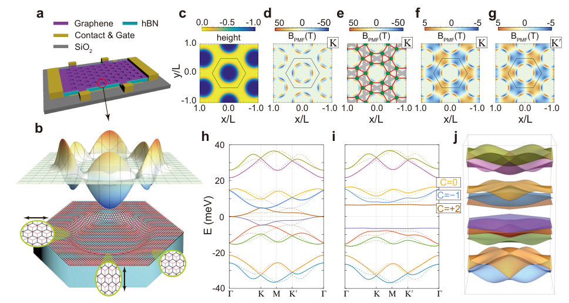
<figcaption class="paper-figure-caption"><b>Fig 1.</b> Figure 1: Pseudo-magnetic field (PMF) superlattice and flat bands engineered in strain-patterned graphene. a, Schematic of strain-patterned graphene devices. Devices are fabricated by transferring graphene onto a lithographically patterned hBN substrate containing a hexagonal array of nanoholes, where the lattice deforms to define a strain superlattice. b, 3D visualization of the PMF landscape from nanohole-induced strain. Radial strain around each nanohole produces a PMF distribution that is maximized when aligned with graphene’s armchair directions and vanishes along zigzag directions. The top panel shows the simulated PMF intensity in the K valley, and the bottom panel illustrates the...</figcaption>
</figure>
<figure class="paper-figure-card">
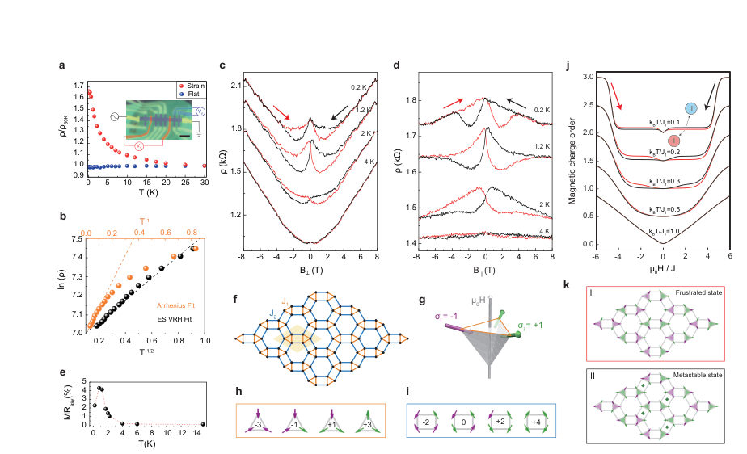
<figcaption class="paper-figure-caption"><b>Fig 2.</b> Figure 2: Emergent strongly correlated frustrated behavior revealed by transport and simulation. a, Normalized resistivity (ρ/ρ30K) as a function of temperature, measured in the same trilayer graphene device from strain-patterned (red dots) and unstrained flat (blue dots) regions. The strain-patterned graphene exhibits a pronounced insulating upturn, whereas the unstrained region displays weakly metallic behavior. Inset: Optical micrograph of the device, with the dashed rectangle indicating the strain-patterned region (scale bar, 5 µm). b, Fits of the strain-patterned region’s resistivity to Arrhenius activation and Efros–Shklovskii variable-range hopping (ES-VRH) models. The good agreement...</figcaption>
</figure>
<figure class="paper-figure-card">
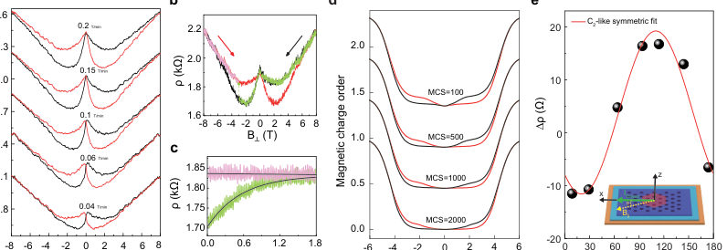
<figcaption class="paper-figure-caption"><b>Fig 3.</b> Figure 3: Dynamic signatures of magnetic frustration in strain-patterned graphene. a, Sweep-rate dependence of magnetic hysteresis at T = 1.2 K, showing non-equilibrium dynamics. b, Relaxation measurements of the magnetoresistivity at 200 mK, measured with a sweep rate of 0.2 T/min. Red and black lines denote the forward and backward field sweeps, respectively. Pink and green lines indicate the field-sweep protocols used to prepare the metastable and frustrated states, respectively, before holding the magnetic field at −3 T. c, Time evolution of the resistivity for the metastable and frustrated states at −3 T, corresponding to the conditions shown in (b). The metastable state remains highly...</figcaption>
</figure>
<figure class="paper-figure-card">
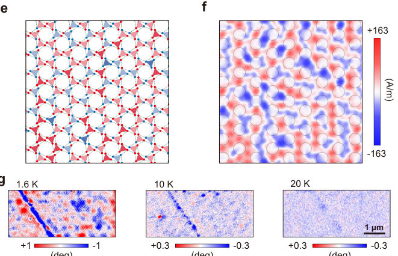
<figcaption class="paper-figure-caption"><b>Fig 4.</b> Figure 4: Imaging the geometrically frustrated magnetism. a, Atomic force microscopy (AFM) topography of a strain-patterned graphene device. b, Kelvin probe force microscopy (KPFM) map of the surface potential from the region marked by the red hexagon in (a). Higher surface potential areas coincide with strong PMFs, consistent with the strain-induced deformation potential. c, Schematic illustration of the PMF configuration, forming an expanded honeycomb (distorted ruby) superlattice. The graphene zigzag axis is rotated by 7◦relative to the x-axis, with the orientation determined using the long-edge alignment method for this device. Blue and orange dots mark PMF maxima with opposite...</figcaption>
</figure>
</div>

<p><strong>Summary.</strong> This paper reports the realization of emergent frustrated magnetism in non-magnetic graphene by applying lithographically controlled strain patterns. The strain creates a pseudo-magnetic field that induces strongly correlated electronic states, leading to magnetic behavior analogous to spin ice. This establishes strain engineering as a versatile, scalable method for creating programmable quantum matter.</p>
<p><strong>Why it may be interesting.</strong> The work provides a concrete, tunable solid-state platform (graphene) to engineer complex quantum magnetic interactions, which is highly relevant for simulating exotic quantum phases without relying on rare magnetic elements.</p>
<details>
<summary>Detailed structure</summary>
<p><strong>Main problem.</strong> The research addresses the fundamental challenge of realizing and studying emergent frustrated magnetism within an intrinsically non-magnetic material.</p>
<p><strong>Main result.</strong> The authors demonstrate that lithographically patterned strain in graphene can induce correlated electronic states exhibiting robust, emergent frustrated magnetism, establishing a scalable platform for programmable quantum matter.</p>
<p><strong>Method.</strong> The study combines advanced experimental techniques, including transport measurements and cryogenic magnetic force microscopy, with theoretical modeling using spin-ice-like effective Hamiltonians and Monte Carlo simulations.</p>
<p><strong>Model / system.</strong> The physical system is graphene patterned into a superlattice via strain engineering, which generates a pseudo-magnetic field (PMF). This PMF induces flat electronic bands and strong electron correlations, leading to magnetic frustration analogous to spin ice.</p>
<p><strong>Key observables.</strong> Anisotropic magnetic hysteresis, slow relaxation dynamics, insulating behavior characterized by Efros–Shklovskii variable-range hopping (ES-VRH), and spatially complex magnetic textures observed via MFM.</p>
<p><strong>Important parameters / regimes.</strong> The effective magnetic moment ($\mu_{eff} \approx 9.0 \mu_B$), the critical magnetic fields ($H_{c,1}, H_{c,2}$) governing charge ordering phases, and the bandwidth of the induced flat bands ($< 6$ meV).</p>
<p><strong>Assumptions / limitations.</strong> The primary assumption is that the strain patterning is perfectly programmable via lithography, and the magnetic response can be effectively modeled using spin-ice-like constraints derived from the PMF landscape.</p>
<p><strong>Figures summary.</strong> Figures illustrate the device structure and PMF profiles, temperature-dependent resistivity showing insulating behavior, magnetotransport hysteresis loops, and MFM images confirming field-dependent magnetic textures.</p>
<p><strong>Paper structure.</strong> The paper progresses from establishing the physical platform (strain-patterned graphene) to characterizing the electronic state (flat bands, correlated regime) via transport measurements, and finally modeling the emergent magnetic behavior using spin-ice analogies and simulating field-dependent charge ordering.</p>
</details>
<details>
<summary>Abstract</summary>
<p>Geometrically frustrated magnetism conventionally arises from pre-existing magnetic moments on lattices whose geometry prevents their interactions from being simultaneously satisfied, giving rise to highly degenerate states and rich collective behavior. Creating such frustration in an intrinsically non-magnetic material presents a fundamentally different challenge, requiring both the magnetism and the competing interactions to emerge from correlated electrons. Here we show that this can be realized in graphene through lithographically programmable strain engineering. Patterning strain and the associated pseudo-magnetic field (PMF) into superlattices creates a correlated electronic system with flat bands and strong interactions. Transport measurements reveal interaction-driven insulating behavior, anisotropic magnetic hysteresis, and slow relaxation dynamics reminiscent of spin freezing, qualitatively captured by Monte Carlo simulations of competing magnetic moments on the PMF-defined ruby superlattice. Cryogenic magnetic force microscopy further reveals magnetic textures associated with the PMF landscape. These observations demonstrate frustrated magnetism emerging from correlated electrons in otherwise non-magnetic graphene. Our results establish lithographic strain engineering as a general and scalable route to flat bands and correlated states in van der Waals materials, providing a versatile platform for programmable quantum matter.</p>
</details>
<p><sub><a href="#top">↑ back to top</a></sub></p>

<p><a id="paper-2609.30377"></a></p>
<h3 id="a-mechanism-for-the-renyi-hierarchy-of-decoherence-induced-phase-transitions"><a href="http://arxiv.org/abs/2609.30377v1">A Mechanism for the Rényi Hierarchy of Decoherence-Induced Phase Transitions</a></h3>
<p><strong>Authors:</strong> Zhou Yang, Yuri D. Lensky, Chao-Ming Jian<br>
<strong>Type:</strong> theory · <strong>Category:</strong> statistical mechanics · <strong>PDF:</strong> <a href="https://arxiv.org/pdf/2609.30377v1">https://arxiv.org/pdf/2609.30377v1</a><br>
<strong>Analysis basis:</strong> full PDF text, analyzed in chunks
<strong>Topic relevance:</strong> <code>correlated / nonlocal dissipation</code> <strong>3/5</strong> · <code>driven-dissipative phase transition</code> <strong>3/5</strong> · <code>non-equilibrium universality</code> <strong>3/5</strong> · <code>Keldysh / 2PI / non-Gaussian methods</code> <strong>2/5</strong> · <code>analog quantum simulation</code> <strong>2/5</strong> · <code>methods for driven-dissipative</code> <strong>2/5</strong> · <code>quantum measurements</code> <strong>1/5</strong></p>
<div class="figure-strip-hint">↔ Scroll figures horizontally</div>
<div class="paper-figures-scroll">
<figure class="paper-figure-card">
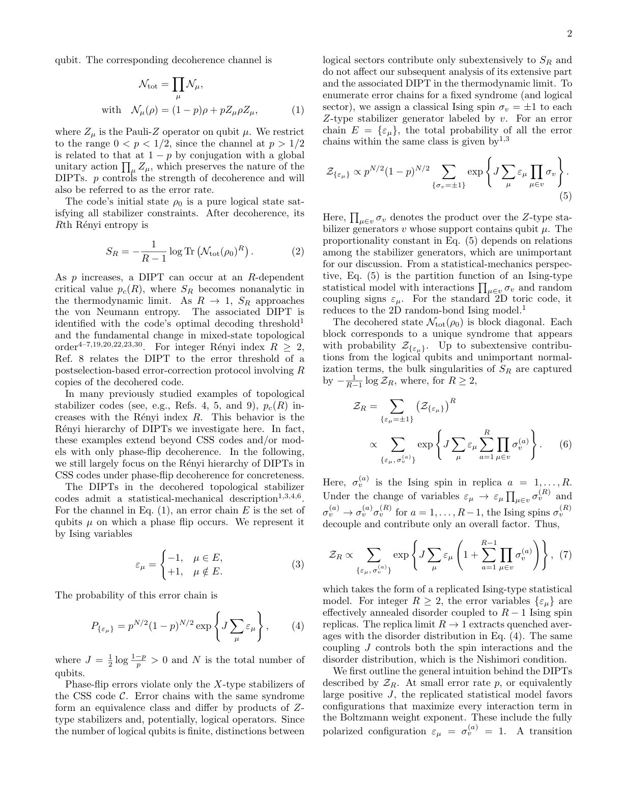
<figcaption class="paper-figure-caption"><b>Fig 1.</b> Low-resolution page preview, page 2</figcaption>
</figure>
<figure class="paper-figure-card">
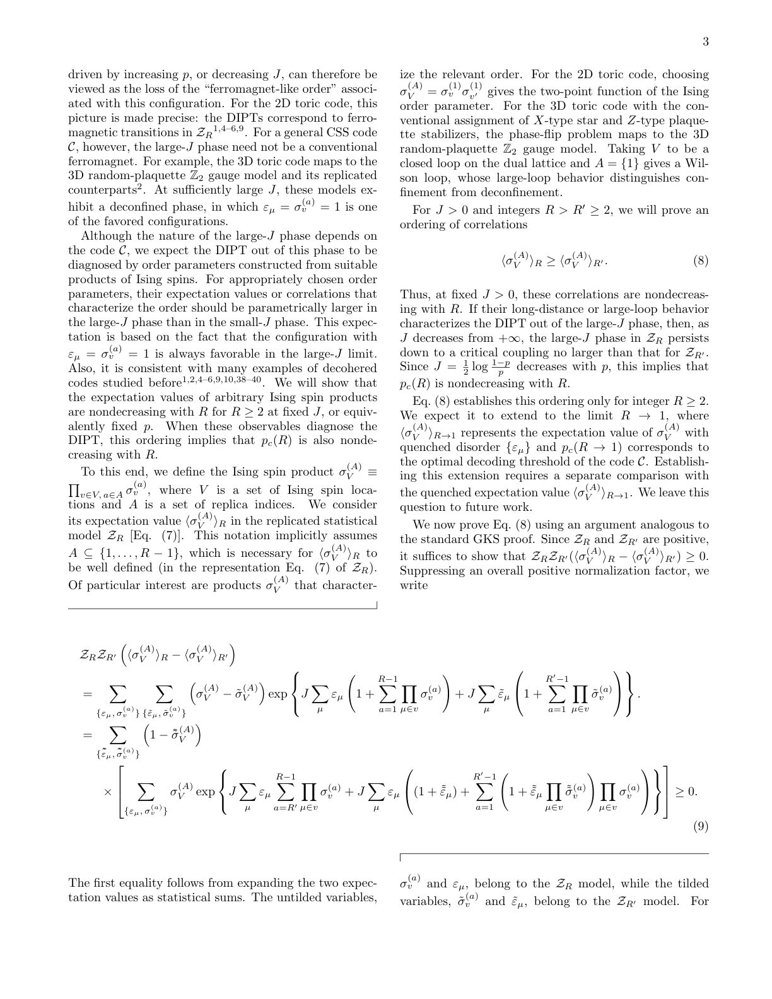
<figcaption class="paper-figure-caption"><b>Fig 2.</b> Low-resolution page preview, page 3</figcaption>
</figure>
<figure class="paper-figure-card">
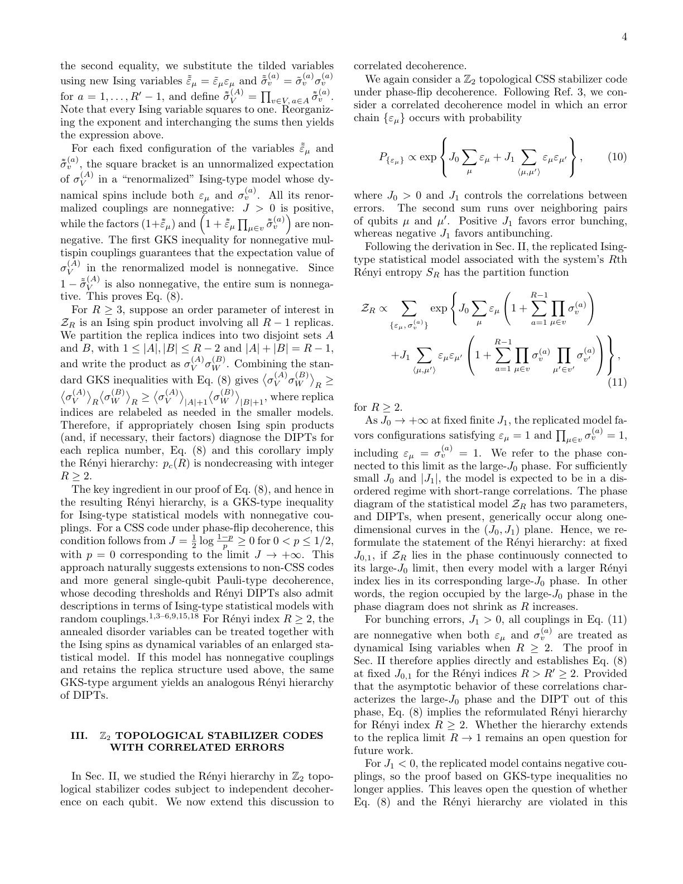
<figcaption class="paper-figure-caption"><b>Fig 3.</b> Low-resolution page preview, page 4</figcaption>
</figure>
<figure class="paper-figure-card">
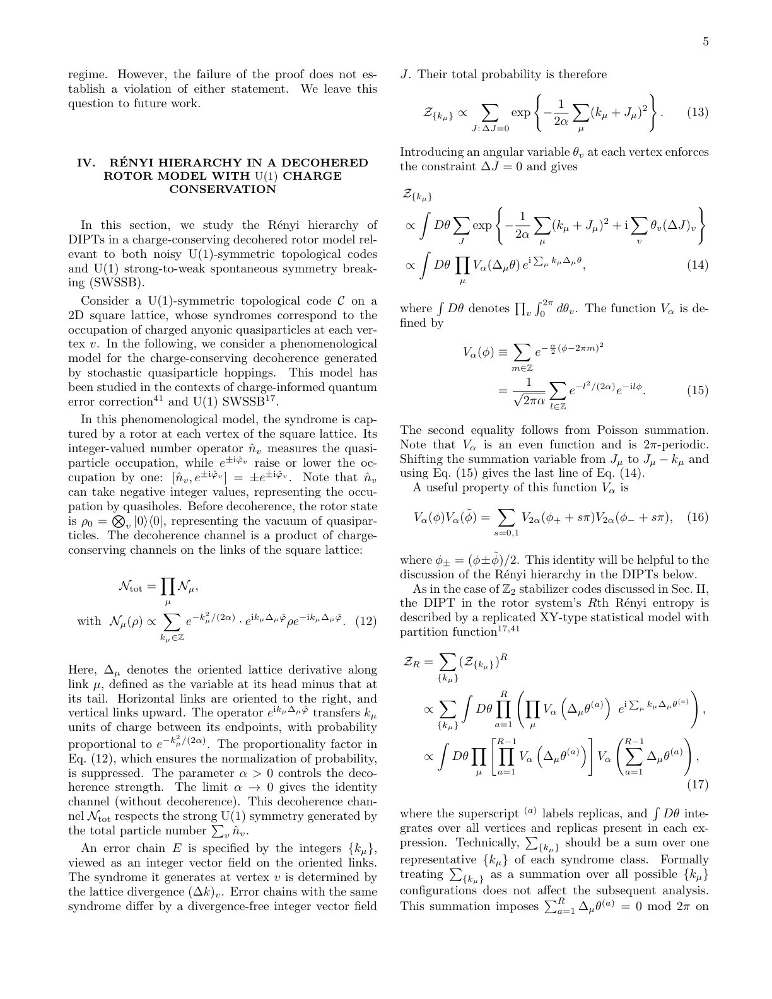
<figcaption class="paper-figure-caption"><b>Fig 4.</b> Low-resolution page preview, page 5</figcaption>
</figure>
<figure class="paper-figure-card">
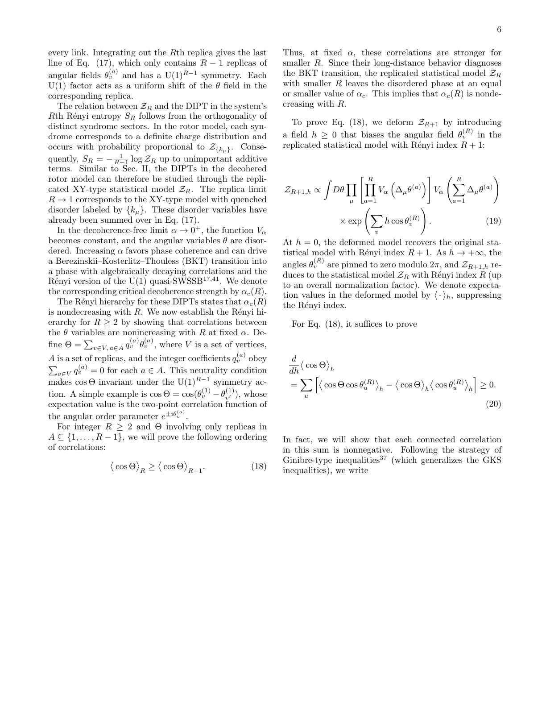
<figcaption class="paper-figure-caption"><b>Fig 5.</b> Low-resolution page preview, page 6</figcaption>
</figure>
</div>

<p><strong>Summary.</strong> This theoretical paper establishes a general mechanism for the Rényi hierarchy of Decoherence-Induced Phase Transitions (DIPTs) by analyzing correlation inequalities in replicated statistical models. Using models like topological codes and rotor systems, the authors prove that the critical decoherence strength increases monotonically with the Rényi index $R$ for $R \ge 2$. This provides a deep mathematical understanding of how entanglement diagnostics reveal the structure of quantum phase boundaries under noise.</p>
<p><strong>Why it may be interesting.</strong> This work provides a powerful, general mathematical tool—the correlation inequality approach—to predict and understand the structure of quantum phase transitions driven by environmental coupling, which is crucial for understanding quantum error correction and open quantum systems.</p>
<details>
<summary>Detailed structure</summary>
<p><strong>Main problem.</strong> The paper aims to identify a general, underlying mechanism responsible for the Rényi hierarchy observed in Decoherence-Induced Phase Transitions (DIPTs). This hierarchy dictates that the critical decoherence strength increases monotonically with the Rényi index $R$ for $R \ge 2$.</p>
<p><strong>Main result.</strong> A general mechanism is established using correlation inequalities within replicated statistical models, proving that the critical decoherence strength $p_c(R)$ is non-decreasing with $R$ for $R \ge 2$ in various models.</p>
<p><strong>Method.</strong> The analysis involves mapping the decohered quantum system to a replicated statistical model (e.g., Ising-type model) and proving the ordering of expectation values of spin products, $\langle \sigma(A)_V 
angle_R \geq \langle \sigma(A)_V 
angle_{R'}$, which serves as the core diagnostic.</p>
<p><strong>Model / system.</strong> The study applies to $Z_2$ topological stabilizer codes subjected to phase-flip decoherence, and a decohered rotor model exhibiting strong U(1) symmetry. The physics is analyzed via replicated partition functions $Z_R$.</p>
<p><strong>Key observables.</strong> Rényi entropy $S_R$, expectation values of Ising spin products $\langle \sigma(A)_V 
angle_R$, and the critical decoherence strength $p_c(R)$ or $\alpha_c(R)$.</p>
<p><strong>Important parameters / regimes.</strong> Rényi index $R$ (integer, $R \ge 2$), decoherence strength $p$ or $\alpha$, and coupling constants $J$ or $J_0, J_1$.</p>
<p><strong>Assumptions / limitations.</strong> The primary mathematical tool relies on establishing correlation inequalities analogous to GKS inequalities, which are proven for integer $R \ge 2$. The extension to the $R 	o 1$ (von Neumann) limit remains an open question.</p>
<p><strong>Figures summary.</strong> The notes do not provide a summary of figures, but the analysis focuses on deriving correlation inequalities (Eq. (8) and Eq. (18)) that establish the required ordering.</p>
<p><strong>Paper structure.</strong> The paper systematically develops the mechanism by first analyzing $Z_2$ codes using Ising spin products, then extending the proof to correlated decoherence, and finally applying the framework to the U(1)-symmetric decohered rotor model.</p>
</details>
<details>
<summary>Abstract</summary>
<p>Decoherence-induced phase transitions (DIPTs) are associated with singular changes in a quantum system's entanglement structure as the decoherence strength varies. In many cases, their critical strengths depend monotonically on the Rényi index of the entanglement diagnostic, forming a Rényi hierarchy. We identify a general mechanism for this hierarchy based on correlation inequalities in replicated statistical models that describe these DIPTs. We demonstrate it in $\mathbb{Z}_2$ topological stabilizer codes subject to independent phase-flip decoherence on each qubit and in a decohered rotor model with strong $\text{U}(1)$ symmetry. When the relevant correlations diagnose the DIPTs, these inequalities imply that the critical decoherence strength is nondecreasing with integer Rényi index $R\geq2$. We show that this mechanism also applies to a class of models with correlated decoherence.</p>
</details>
<p><sub><a href="#top">↑ back to top</a></sub></p>

<p><a id="paper-2609.31239"></a></p>
<h3 id="chiral-transfer-and-entanglement-generation-of-even-parity-bell-states-with-engineered-two-photon-loss"><a href="http://arxiv.org/abs/2609.31239v1">Chiral Transfer and Entanglement Generation of Even-Parity Bell States with Engineered Two-Photon Loss</a></h3>
<p><strong>Authors:</strong> Lin Xiao, Jian Li, Mu Zhou, Bin Wei, Qing-Xu Li, Jia-Ji Zhu<br>
<strong>Type:</strong> theory · <strong>Category:</strong> quantum information and computing · <strong>PDF:</strong> <a href="https://arxiv.org/pdf/2609.31239v1">https://arxiv.org/pdf/2609.31239v1</a><br>
<strong>Analysis basis:</strong> full PDF text, analyzed in chunks
<strong>Topic relevance:</strong> <code>correlated / nonlocal dissipation</code> <strong>3/5</strong> · <code>driven-dissipative phase transition</code> <strong>3/5</strong> · <code>methods for driven-dissipative</code> <strong>3/5</strong> · <code>Keldysh / 2PI / non-Gaussian methods</code> <strong>2/5</strong> · <code>analog quantum simulation</code> <strong>2/5</strong> · <code>non-equilibrium universality</code> <strong>2/5</strong> · <code>quantum measurements</code> <strong>1/5</strong></p>
<div class="figure-strip-hint">↔ Scroll figures horizontally</div>
<div class="paper-figures-scroll">
<figure class="paper-figure-card">
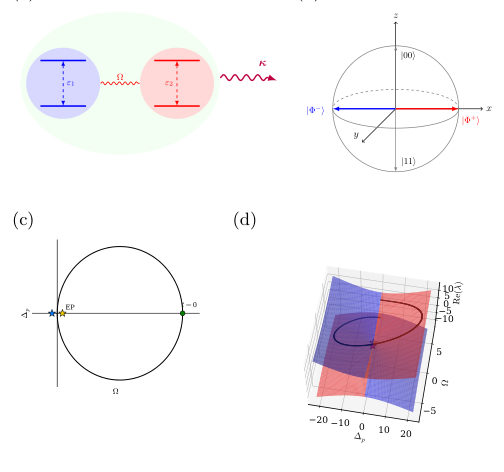
<figcaption class="paper-figure-caption"><b>Fig 1.</b> Fig. 1. (a) A system composed of two interacting qubits with two-photon dissipation into the environment at rate κ. (b) Bloch-sphere representation of the even-parity subspace spanned by |11⟩and |00⟩, where z = |11⟩⟨11| −|00⟩⟨00|. The target Bell states |Φ±⟩are marked on the sphere. (c) Clockwise (CW) and counterclockwise (CCW) evolution tra- jectories of Ω(t) and ∆p(t) in the parameter space (Ω, ∆p). The asterisk marks the second-order exceptional point (EP) of Heff even. (d) Riemann surfaces corresponding to the eigenval- ues of Heff even. The branch with stronger decay (more negative imaginary part) is shown in red, and the black trajectories correspond to the parameter loop (Ω(t), ∆p(t)).</figcaption>
</figure>
<figure class="paper-figure-card">
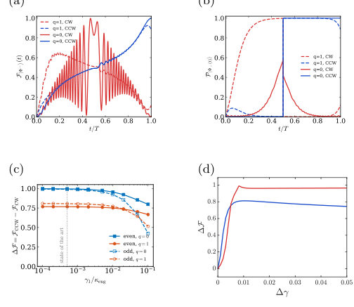
<figcaption class="paper-figure-caption"><b>Fig 2.</b> Fig. 2. (a) Time evolution of the fidelity F|Φ−⟩(t) for a pro- tocol that starts from |Φ+⟩and targets |Φ−⟩. The red and blue curves correspond to CW and CCW encircling, respec- tively. (b) Projection probability of the evolving state onto the instantaneous eigenstate |Φ−(t)⟩. Panels (c) and (d) de- note robustness of the chiral effect ∆F = FCCW −FCW. (c) ∆F when the present even-parity scheme (solid lines, filled markers) and the odd-parity scheme of Ref. [33] (dashed lines, open markers) are subjected to the same parasitic pertur- bation: an unmonitored local single-photon loss of rate γ1 on each qubit, expressed in units of the engineered dissipa- tion scale κeng of each scheme (κeng = κ...</figcaption>
</figure>
<figure class="paper-figure-card">
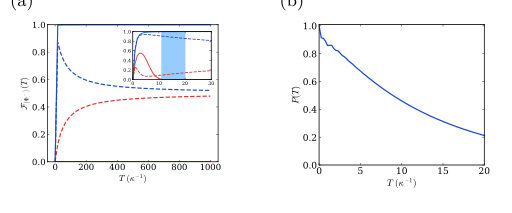
<figcaption class="paper-figure-caption"><b>Fig 3.</b> Fig. 3. (a) Final-state fidelity F|Φ−⟩(T) as a function of the driving period T. The inset shows a magnified view of the range T ∈[0, 30], and the light-blue shaded region highlights the intermediate window T ∈[11, 20]κ−1. (b) Post-selection success probability P(T) = Tr[ρ(T)] as a function of the pe- riod T for q = 0. The other parameters are the same as in Fig. 2.</figcaption>
</figure>
<figure class="paper-figure-card">
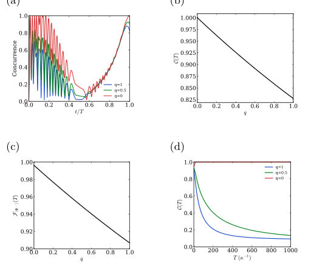
<figcaption class="paper-figure-caption"><b>Fig 4.</b> Fig. 4. (a) Time evolution of the concurrence C as a function of t/T for CCW loops with q = 0, 0.5, and 1. (b) Final concurrence C(T) as a function of the recycling parameter q for the CCW loop. (c) Final fidelity F|Φ−⟩(T) as a function of q for the CCW loop. (d) Final concurrence C(T) as a function of the driving period T for the CCW loop. The initial state is |00⟩in all cases. For panels (a)–(c), Tκ = 11. Other parameters are the same as in Fig. 2.</figcaption>
</figure>
<figure class="paper-figure-card">
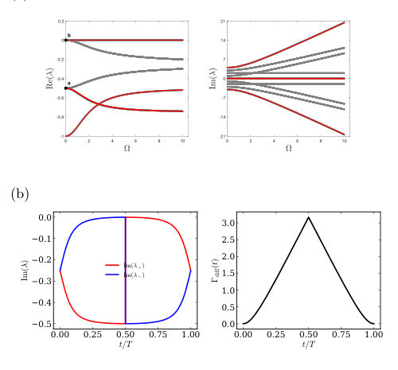
<figcaption class="paper-figure-caption"><b>Fig 5.</b> Fig. 5. (a) Comparison between the spectrum of the full Li- ouvillian superoperator L and that of the reduced Liouvil- lian L1 restricted to the even-parity subspace. Gray thick lines: all 16 eigenvalues of L (left: real parts; right: imag- inary parts). Red thin lines: the 4 eigenvalues of L1. The red spectrum overlaps with a subset of the gray spectrum, and no avoided level repulsion appears at the marked cross- ings (e.g., a, b). Parameters: κ = 1, ϕ = 0, ∆1 = 3κ, ∆2 = 1κ. (b) Left: evolution of the imaginary parts Im(λ±) of the eigenvalues of the effective Hamiltonian Heff along the CCW loop. The shaded regions indicate the instantaneous low-loss branches. Right: evolution of the...</figcaption>
</figure>
</div>

<p><strong>Summary.</strong> This paper details a method to control even-parity Bell states in a two-qubit system using engineered two-photon loss. By adiabatically encircling an exceptional point, the system exhibits chiral state transfer between $|\Phi^+
angle$ and $|\Phi^-
angle$. Crucially, the same engineered process simultaneously generates strong even-parity entanglement, unifying two key quantum control mechanisms.</p>
<p><strong>Why it may be interesting.</strong> This work provides a concrete, engineered platform demonstrating how non-Hermitian physics (EPs) can be harnessed to perform fundamental quantum information tasks (state transfer and entanglement) in a robust, dissipative manner.</p>
<details>
<summary>Detailed structure</summary>
<p><strong>Main problem.</strong> The research aims to extend chiral state transfer and dissipative entanglement generation protocols from odd-parity to even-parity Bell states in a two-qubit system.</p>
<p><strong>Main result.</strong> The authors demonstrate that adiabatically encircling a second-order exceptional point induces chiral transfer between $|\Phi^+
angle$ and $|\Phi^-
angle$, and that the same loop can deterministically generate strong even-parity entanglement from a separable state.</p>
<p><strong>Method.</strong> The dynamics are analyzed using a hybrid Liouvillian description, which interpolates between conditional no-jump dynamics and standard Lindblad evolution, coupled with the theoretical framework of non-Hermitian physics.</p>
<p><strong>Model / system.</strong> The system is a two-qubit platform driven by coherent two-photon processes and engineered two-photon loss. The dynamics are confined to the even-parity subspace, which is structurally protected by parity symmetry.</p>
<p><strong>Key observables.</strong> Bell-state fidelity ($F_{|\Phi^\pm
angle}$), Concurrence ($C(
ho)$), and the chiral contrast ($\Delta F$).</p>
<p><strong>Important parameters / regimes.</strong> The recycling parameter $q \in [0, 1]$, the driving period $T$, and the engineered two-photon loss rate $\kappa$.</p>
<p><strong>Assumptions / limitations.</strong> The analysis relies on the Markov approximation, and the structural protection of the even-parity subspace is key to robustness.</p>
<p><strong>Figures summary.</strong> Figures illustrate the Bloch-sphere representation of the even-parity subspace, the parameter loops used to encircle the EP, and the time evolution of fidelity and concurrence as a function of the loop parameters.</p>
<p><strong>Paper structure.</strong> The paper first establishes the physical model and the effective Hamiltonian in the even-parity subspace. It then introduces the hybrid Liouvillian dynamics to analyze the interplay between chiral transfer (via EP encirclement) and entanglement generation, comparing the conditional ($q=0$) and unconditional ($q=1$) limits.</p>
</details>
<details>
<summary>Abstract</summary>
<p>We investigate chiral transfer and dissipative generation of even-parity Bell states in a two-qubit system with coherent two-photon driving and engineered two-photon loss. We find that adiabatic encirclement of a second-order exceptional point induces direction-dependent transfer between the Bell states $|Φ^+\rangle$ and $|Φ^-\rangle$, governed by a time-integrated low-loss branch-selection mechanism. We develop a hybrid-Liouvillian description with a control parameter $q$ that interpolates between conditional no-jump dynamics and unconditional Lindblad evolution, and use it to assess how exceptional-point-induced chirality survives in the presence of quantum jumps. When the same parameter loop is initialized in the separable state $|00\rangle$, it directly generates strong even-parity entanglement. Together, these results extend dissipative Bell-state control beyond the single-excitation manifold. They further demonstrate that exceptional-point-based protocols can unify chiral state transfer and entanglement generation within a single engineered two-photon platform.</p>
</details>
<p><sub><a href="#top">↑ back to top</a></sub></p>

<p><a id="paper-2609.31134"></a></p>
<h3 id="high-gain-vortex-transfer-via-activated-forbidden-transitions-in-molecular-magnets"><a href="http://arxiv.org/abs/2609.31134v1">High-gain vortex transfer via activated forbidden transitions in molecular magnets</a></h3>
<p><strong>Authors:</strong> Fan Meng, Hao Zhu, Xin-Yao Huang, Guo-Feng Zhang<br>
<strong>Type:</strong> theory · <strong>Category:</strong> other · <strong>PDF:</strong> <a href="https://arxiv.org/pdf/2609.31134v1">https://arxiv.org/pdf/2609.31134v1</a><br>
<strong>Analysis basis:</strong> full PDF text, analyzed in chunks
<strong>Topic relevance:</strong> <code>interference shaping light</code> <strong>3/5</strong> · <code>Keldysh / 2PI / non-Gaussian methods</code> <strong>2/5</strong> · <code>methods for driven-dissipative</code> <strong>2/5</strong> · <code>analog quantum simulation</code> <strong>1/5</strong> · <code>correlated / nonlocal dissipation</code> <strong>1/5</strong> · <code>driven-dissipative phase transition</code> <strong>1/5</strong> · <code>quantum measurements</code> <strong>1/5</strong></p>
<div class="figure-strip-hint">↔ Scroll figures horizontally</div>
<div class="paper-figures-scroll">
<figure class="paper-figure-card">
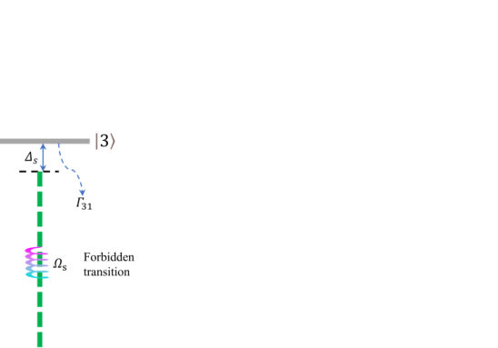
<figcaption class="paper-figure-caption"><b>Fig 1.</b> Fig. 1. A three-level ladder-type configuration with broken symmetry. The weak probe field p </figcaption>
</figure>
<figure class="paper-figure-card">
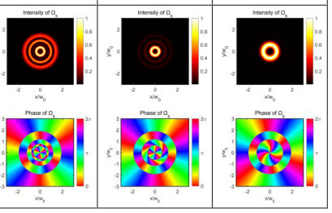
<figcaption class="paper-figure-caption"><b>Fig 2.</b> Fig. 2(a). When the probe field ( ) 0 p  is prepared in the 3 2 LG vortex mode, the intensity and</figcaption>
</figure>
<figure class="paper-figure-card">
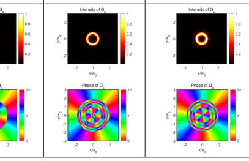
<figcaption class="paper-figure-caption"><b>Fig 3.</b> Fig. 2(b). When the probe field ( ) 0 p  is prepared in the 3 2 LG vortex mode, the intensity and</figcaption>
</figure>
<figure class="paper-figure-card">
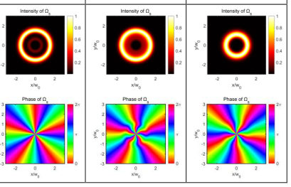
<figcaption class="paper-figure-caption"><b>Fig 4.</b> Fig. 3(a). When the probe field ( ) 0 p  and the control field c  are prepared in the vortex modes</figcaption>
</figure>
<figure class="paper-figure-card">
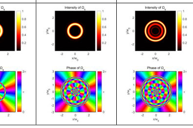
<figcaption class="paper-figure-caption"><b>Fig 5.</b> Fig. 3(b). When the probe field ( ) 0 p  and the control field c  are prepared in the vortex modes</figcaption>
</figure>
</div>

<p><strong>Summary.</strong> This work demonstrates high-gain vortex light transfer in molecular magnets by exploiting symmetry-breaking mechanisms to activate forbidden optical transitions. The theoretical analysis shows that the Autler-Townes splitting effect surpasses EIT in enhancing the signal gain, challenging the universal dominance of EIT in nonlinear optics. The results suggest potential applications for quantum information processing in solid-state quantum systems.</p>
<p><strong>Why it may be interesting.</strong> It provides a concrete, solid-state platform (molecular magnets) to study fundamental quantum optics phenomena like forbidden transition enhancement, offering a novel comparison between EIT and ATS in a highly controllable solid-state environment.</p>
<details>
<summary>Detailed structure</summary>
<p><strong>Main problem.</strong> The paper aims to achieve high-gain vortex light transfer in molecular magnets by enabling optical transitions that are otherwise forbidden by selection rules.</p>
<p><strong>Main result.</strong> The Autler-Townes splitting (ATS) effect was shown to yield a significantly larger signal field gain than Electromagnetically Induced Transparency (EIT) in this specific nonlinear three-wave mixing process.</p>
<p><strong>Method.</strong> The study employs a theoretical analysis using a three-level ladder-type configuration and solving the Maxwell-Bloch equations under perturbative approximations.</p>
<p><strong>Model / system.</strong> The physical system is the molecular magnet $[	ext{Cr}(	ext{C}_3	ext{S}_5)_3]^{3-}$, modeled by a spin Hamiltonian. The dynamics are analyzed using a three-level ladder configuration, where symmetry breaking allows nominally forbidden transitions.</p>
<p><strong>Key observables.</strong> Intensity and phase of the generated vortex signal field; the topological charges of the incident and generated fields.</p>
<p><strong>Important parameters / regimes.</strong> Detuning of the probe field, strength of the control field, and the ratio of signal gain between ATS and EIT.</p>
<p><strong>Assumptions / limitations.</strong> The analysis assumes the absence of nuclear spins to suppress decoherence and relies on the perturbative approximation for weak probe and signal fields.</p>
<p><strong>Figures summary.</strong> Figure 1 illustrates the three-level ladder configuration with broken symmetry, showing the nonlinear three-wave mixing process generating a signal field.</p>
<p><strong>Paper structure.</strong> The paper establishes the physical model using a three-level ladder system, derives the coupled equations for field propagation, calculates the field amplitudes using steady-state solutions, and compares the gain mechanisms (ATS vs. EIT).</p>
</details>
<details>
<summary>Abstract</summary>
<p>Vortex light has garnered considerable interest in recent years owing to its distinctive properties and broad application potential. In this paper, we employ a conventional three-level ladder-type configuration in molecular magnets to realize high-gain vortex light transfer by enabling otherwise forbidden transitions. We demonstrate that the intensity and phase of the generated vortex signal field are governed by the detuning of the probe field and the strength of the control field, and that the topological charges of the incident and generated fields obey a well-defined algebraic relation during the vortex transfer process. Furthermore, we show that, in molecular magnets, the Autler-Townes splitting (ATS) effect yields a larger vortex signal field gain than electromagnetically induced transparency (EIT) over a broad parameter range in nonlinear three-wave mixing. This result suggests that the widely accepted view of EIT as the dominant enhancer of nonlinear optical effects may not hold universally. In addition, we revisit previous studies and re-examine the characterization of vortex beam transfer efficiency, emphasizing the need for a more careful interpretation in multi-beam interaction systems. Leveraging the long spin coherence and microwave transitions of molecular magnets, our results may enable quantum information transfer, storage, computing, and radar imaging in solid-state platforms.</p>
</details>
<p><sub><a href="#top">↑ back to top</a></sub></p>

<p><a id="paper-2609.31241"></a></p>
<h3 id="frequency-and-power-dependent-optical-response-of-a-cesium-rydberg-microwave-receiver"><a href="http://arxiv.org/abs/2609.31241v1">Frequency- and Power-Dependent Optical Response of a Cesium Rydberg Microwave Receiver</a></h3>
<p><strong>Authors:</strong> Jure Pirman, Ema Stopar, Katja Gosar, Erik Zupanič, Peter Jeglič<br>
<strong>Type:</strong> experiment · <strong>Category:</strong> other · <strong>PDF:</strong> <a href="https://arxiv.org/pdf/2609.31241v1">https://arxiv.org/pdf/2609.31241v1</a><br>
<strong>Analysis basis:</strong> full PDF text, analyzed in chunks
<strong>Topic relevance:</strong> <code>quantum optics experiment</code> <strong>3/5</strong> · <code>analog quantum simulation</code> <strong>2/5</strong> · <code>interference shaping light</code> <strong>2/5</strong> · <code>Rydberg arrays</code> <strong>1/5</strong> · <code>driven-dissipative phase transition</code> <strong>1/5</strong> · <code>quantum measurements</code> <strong>1/5</strong></p>
<div class="figure-strip-hint">↔ Scroll figures horizontally</div>
<div class="paper-figures-scroll">
<figure class="paper-figure-card">
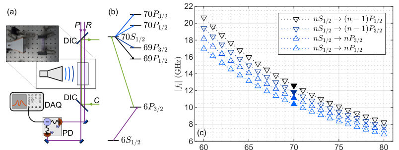
<figcaption class="paper-figure-caption"><b>Fig 1.</b> Figure 1: (a) Schematic of the experiment. Probe beam (P) and reference beam (R) propagate through the cesium vapor cell. The probe beam is overlayed with the counter-propagating coupling (c) beam. Probe and coupling beams are combined and separated using dichroic mirrors (DIC). An RF horn antenna is used to generate microwave fields. The probe and reference beams are separated using D-shaped mirror and is guided onto the differential photodetector (PD), where the reference signal is subtracted from the probe. The electric signal is then acquired using a digital acquisition board (DAQ). (b) Energy level diagram used throughout the experiment. (c) Transition frequencies for different...</figcaption>
</figure>
<figure class="paper-figure-card">

<figcaption class="paper-figure-caption"><b>Fig 2.</b> Figure 2: Normalized EIT signals for different RF powers, at RF frequencies (a) 11.062 GHz, (b) 11.107 GHz, and (c) 11.152 GHz. These correspond to detunings δRF of −57, −12, and +33 MHz from the experimentally determined transition frequency f0 = 11.119 GHz (theoretical value f0 = 11.124 GHz, per Table (1).</figcaption>
</figure>
<figure class="paper-figure-card">

<figcaption class="paper-figure-caption"><b>Fig 3.</b> Fig. 4(a) clearly shows spectral features associated with four nearby Rydberg–Rydberg tran- sitions. Their calculated frequencies are marked by horizontal dash-dotted lines and are listed in Table 1. The position of the smaller peak follows the large-detuning behavior predicted by Eq. (4). The direction or sign of the slope corresponds to the sign of the transition frequency listed in Table 1. The expected high-detuning positions of the smaller peaks are indicated by dashed lines. Additional weaker features can be attributed to degenerate two-photon RF resonances for 70S1/2 →69S1/2 and 70S1/2 →71S1/2 transitions. Here two microwave photons are absorbed simultaneously and therefore excite a...</figcaption>
</figure>
<figure class="paper-figure-card">
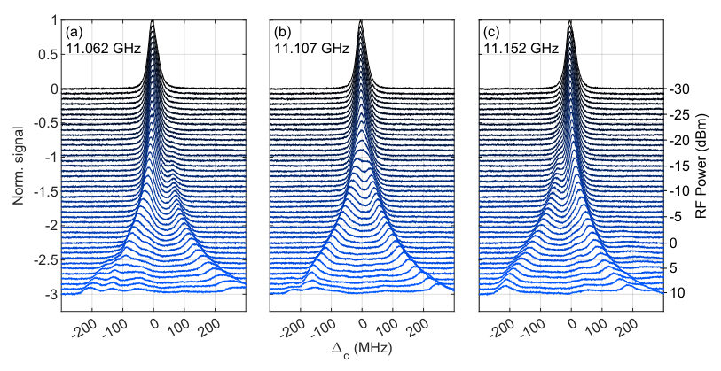
<figcaption class="paper-figure-caption"><b>Fig 4.</b> Fig. 5(a) shows the transmission signal as a function of RF frequency and applied RF power for zero coupling-laser detuning. Spectral features associated with the same four Rydberg–Rydberg transitions can again be observed, together with the aforementioned degenerate two-photon RF resonance. The white arrow marks the RF frequencies at which vertical cuts through the map</figcaption>
</figure>
<figure class="paper-figure-card">
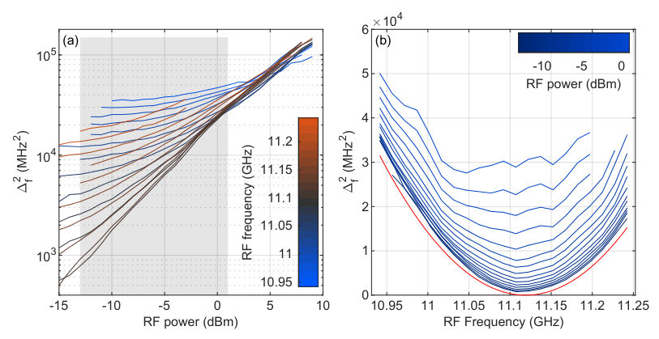
<figcaption class="paper-figure-caption"><b>Fig 5.</b> Figure 3: Square of frequency difference ∆2 f between largest peaks observed in the EIT signal for different RF powers and frequencies. Frequencies are chosen near the 70S1/2 →70P3/2 transition. (a) depicts the dependence on the RF power. At high RF powers or low detunings from resonance ∆f has a power law scaling. (b) shows the dependence of splitting ∆f as a function of detuning from resonance. Red line shows the limit value where the RF power approaches 0. Increasing the RF power shifts the ∆2 f parabola to higher values without modifying the general shape.</figcaption>
</figure>
</div>

<p><strong>Summary.</strong> This paper experimentally characterizes a cesium vapor cell acting as a Rydberg microwave receiver using Electromagnetically Induced Transparency (EIT). By measuring the optical response across varying microwave frequencies and powers, the authors map out the system's frequency- and power-dependent behavior. This demonstrates the feasibility of using Rydberg atoms for high-sensitivity radio frequency sensing and metrology.</p>
<p><strong>Why it may be interesting.</strong> This work provides a concrete, measurable platform for studying nonlinear quantum optics effects (EIT) driven by microwave fields, offering insights into how external fields modify atomic energy level couplings in Rydberg systems.</p>
<details>
<summary>Detailed structure</summary>
<p><strong>Main problem.</strong> To experimentally investigate the frequency- and power-dependent optical response of a room-temperature cesium vapor cell used as a Rydberg microwave receiver.</p>
<p><strong>Main result.</strong> The experiment successfully characterized the system's response across various RF frequencies and power levels, resolving multiple Rydberg-Rydberg transitions and demonstrating its potential as a high-sensitivity RF sensor.</p>
<p><strong>Method.</strong> The study measures probe transmission through the vapor cell while sweeping the microwave frequency and applied RF power, analyzing the resulting Electromagnetically Induced Transparency (EIT) spectra.</p>
<p><strong>Model / system.</strong> The system utilizes Cesium atoms in a Rydberg state within an EIT configuration. The microwave field couples the $70S_{1/2}$ state to nearby P-states, and the response is analyzed using a driven two-level system model.</p>
<p><strong>Key observables.</strong> EIT spectra, peak separation ($\Delta_f$), midpoint power ($P_0$), and transition frequency ($f_0$).</p>
<p><strong>Important parameters / regimes.</strong> RF frequencies (9 to 13.5 GHz), RF power (40 dB range), and coupling laser detuning ($\Delta_c$).</p>
<p><strong>Assumptions / limitations.</strong> The analysis relies on the two-level model for microwave coupling, and the measurements are performed without active magnetic-field compensation.</p>
<p><strong>Figures summary.</strong> Figures show normalized EIT signals at different RF powers across varying frequencies, and plots detail the dependence of the peak splitting ($\Delta_f$) on both RF power and detuning.</p>
<p><strong>Paper structure.</strong> The paper details the experimental setup, presents measurements of the EIT spectra across a wide parameter space, analyzes the resulting spectral splittings in different power regimes, and characterizes the power-dependent response using sigmoidal fitting.</p>
</details>
<details>
<summary>Abstract</summary>
<p>We show experimentally obtained frequency- and power-dependent optical response of a room-temperature cesium vapor cell used as a Rydberg microwave receiver based on electromagnetically induced transparency. An applied microwave field couples the ${70S_{1/2}}$ Rydberg state to the nearby ${70P_{1/2}}$, ${70P_{3/2}}$, ${69P_{1/2}}$, and ${69P_{3/2}}$ states, modifying the probe-transmission spectrum. Probe transmission is recorded over a 800 MHz range of coupling laser detunings. These EIT spectra are measured for RF frequencies from 9 to 13.5 GHz and over a 40 dB range of RF power. We analyze the RF induced splittings in the recorded EIT spectra. We observe both limiting cases, where the EIT peak separation is either dominated by the RF detuning or by the RF power. At higher powers we are also able to observe complex features due to coupling of multiple nearby Rydberg states. We further analyze the probe-transmission signal at zero coupling-laser detuning. Sigmoidal fits to the power-response curves are used to determine the midpoint power and the 10-90% transition interval as functions of RF frequency.</p>
</details>
<p><sub><a href="#top">↑ back to top</a></sub></p>

<p><a id="paper-2609.30632"></a></p>
<h3 id="a-novel-math180math-derivative-framework-with-applications-to-math181math-deformed-thermodynamics-and-leakage-suppression-in-superconducting-qubits"><a href="http://arxiv.org/abs/2609.30632v1">A Novel $q$-Derivative Framework with Applications to $q$-Deformed Thermodynamics and Leakage Suppression in Superconducting Qubits</a></h3>
<p><strong>Authors:</strong> André A. A. Marinho, Gisele B. Freitas, Clovis A. C. Filho<br>
<strong>Type:</strong> theory · <strong>Category:</strong> quantum information and computing · <strong>PDF:</strong> <a href="https://arxiv.org/pdf/2609.30632v1">https://arxiv.org/pdf/2609.30632v1</a><br>
<strong>Analysis basis:</strong> full PDF text, analyzed in chunks
<strong>Topic relevance:</strong> <code>QC/QI experiment</code> <strong>3/5</strong> · <code>Keldysh / 2PI / non-Gaussian methods</code> <strong>1/5</strong> · <code>correlated / nonlocal dissipation</code> <strong>1/5</strong> · <code>driven-dissipative phase transition</code> <strong>1/5</strong> · <code>methods for driven-dissipative</code> <strong>1/5</strong> · <code>quantum measurements</code> <strong>1/5</strong></p>
<div class="figure-strip-hint">↔ Scroll figures horizontally</div>
<div class="paper-figures-scroll">
<figure class="paper-figure-card">
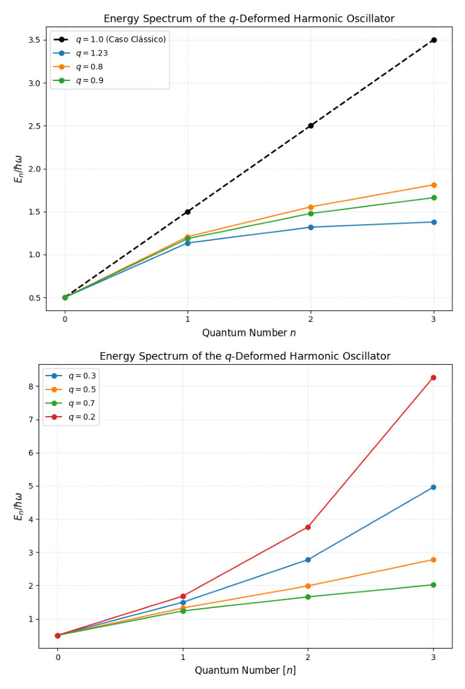
<figcaption class="paper-figure-caption"><b>Fig 1.</b> Figure 1. Relative energy levels En/ℏω as a function of the quantum number n for different values</figcaption>
</figure>
<figure class="paper-figure-card">
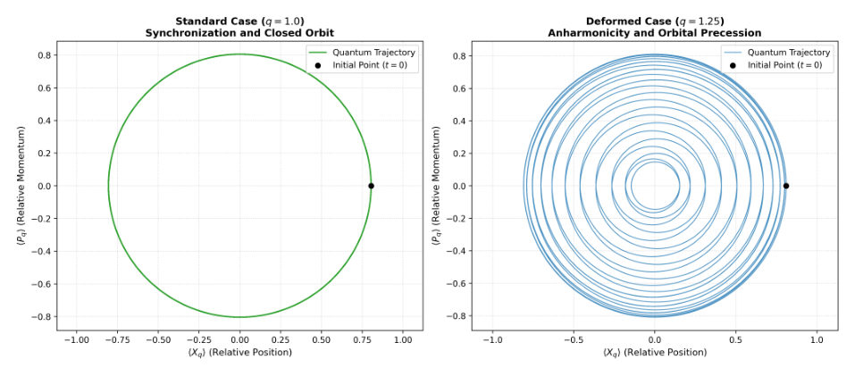
<figcaption class="paper-figure-caption"><b>Fig 2.</b> Figure 2. Time evolution of the expectation value of the annihilation operator in phase space for</figcaption>
</figure>
<figure class="paper-figure-card">
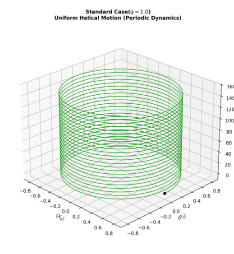
<figcaption class="paper-figure-caption"><b>Fig 3.</b> Figure 3. Trajectory in phase space for d = 3.</figcaption>
</figure>
</div>

<p><strong>Summary.</strong> This paper introduces a novel q-derivative framework to study physical systems under algebraic deformation. It applies this theory to derive corrections for superconducting qubits, offering a robust method to suppress computational leakage during fast quantum gates. Furthermore, it demonstrates the framework's utility in consistently describing q-deformed thermodynamic properties.</p>
<p><strong>Why it may be interesting.</strong> It bridges abstract mathematical structures (q-calculus) with concrete, cutting-edge hardware challenges (superconducting qubit control), providing a generalized theoretical tool for error mitigation.</p>
<details>
<summary>Detailed structure</summary>
<p><strong>Main problem.</strong> The paper develops a novel q-derivative framework to model physical systems, specifically addressing q-deformed thermodynamics and suppressing computational leakage in superconducting qubits.</p>
<p><strong>Main result.</strong> The framework successfully derives analytical pulse-shaping corrections for superconducting qubits, generalizing the DRAG technique to suppress leakage, while also showing that q-deformation induces intrinsic anharmonicity in quantum oscillator spectra.</p>
<p><strong>Method.</strong> The authors utilize a novel q-derivative operator built from Jackson's q-number formulation and apply it to analyze q-deformed Heisenberg algebras and superconducting qubit Hamiltonians.</p>
<p><strong>Model / system.</strong> The primary physical platform is superconducting transmon qubits, modeled in a three-level subspace. The theoretical framework involves q-deformed algebras, q-Fock spaces, and the application of the Biedenharn-Macfarlane realization.</p>
<p><strong>Key observables.</strong> Leakage suppression fidelity ($F > 99.99\%$), $q$-deformed energy spectrum ($E_n$), internal energy ($U_q$), and specific heat ($C_V(q)$).</p>
<p><strong>Important parameters / regimes.</strong> The deformation parameter $q$, the anharmonicity parameter $\delta_q$, and the gate time $T_{	ext{gate}}$ are crucial parameters.</p>
<p><strong>Assumptions / limitations.</strong> The analysis assumes the validity of the q-derivative framework to maintain structural consistency across different physical regimes, and it models the qubit dynamics within a three-level subspace.</p>
<p><strong>Figures summary.</strong> Not specified, but the notes reference equations detailing the q-deformed Hamiltonian, the leakage condition, and the pulse-shaping cancellation condition.</p>
<p><strong>Paper structure.</strong> The paper introduces the novel q-derivative, applies it to q-deformed thermodynamics (dilute gas limits), analyzes the resulting anharmonic spectra, and culminates in applying the formalism to derive pulse-shaping corrections for superconducting qubits.</p>
</details>
<details>
<summary>Abstract</summary>
<p>We propose a new $q$-derivative operator built directly from Jackson's $q$-number formulation, designed to preserve the structural properties of standard differential calculus while incorporating deformation effects. By analyzing $q$-deformed Heisenberg algebras, we demonstrate that this formulation maintains the consistency of thermodynamic quantities-such as internal energy, particle number, and specific heat-in dilute gas limits without requiring ad-hoc chain-rule modifications. Furthermore, we explore the physical implications of algebraic deformation using the Biedenharn-Macfarlane realization, showing how $q$-deformation induces intrinsic anharmonicity in quantum oscillator spectra and affects multi-level quantum systems ($d \ge 3$). Applying this algebraic scheme to superconducting transmon qubits, we derive analytical pulse-shaping corrections that generalize the Derivative Removal by Adiabatic Gate (DRAG) technique, offering a robust method to suppress computational leakage in ultra-fast quantum logic operations.</p>
</details>
<p><sub><a href="#top">↑ back to top</a></sub></p>

<p><a id="paper-2609.31370"></a></p>
<h3 id="adaptive-dissipative-state-preparation-through-reinforcement-learning"><a href="http://arxiv.org/abs/2609.31370v1">Adaptive Dissipative State Preparation through Reinforcement Learning</a></h3>
<p><strong>Authors:</strong> Nathan M. Myers, Chenxu Liu, Yulong Dong, Nicholas P. Bauman, Karol Kowalski<br>
<strong>Type:</strong> theory · <strong>Category:</strong> quantum information and computing · <strong>PDF:</strong> <a href="https://arxiv.org/pdf/2609.31370v1">https://arxiv.org/pdf/2609.31370v1</a><br>
<strong>Analysis basis:</strong> full PDF text, analyzed in chunks
<strong>Topic relevance:</strong> <code>methods for driven-dissipative</code> <strong>3/5</strong> · <code>quantum measurements</code> <strong>2/5</strong> · <code>analog quantum simulation</code> <strong>1/5</strong> · <code>correlated / nonlocal dissipation</code> <strong>1/5</strong> · <code>driven-dissipative phase transition</code> <strong>1/5</strong></p>
<div class="figure-strip-hint">↔ Scroll figures horizontally</div>
<div class="paper-figures-scroll">
<figure class="paper-figure-card">
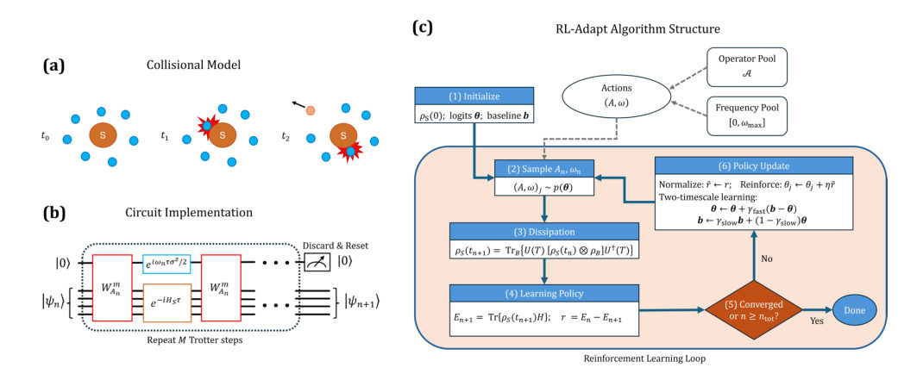
<figcaption class="paper-figure-caption"><b>Fig 1.</b> FIG. 1. (a) Illustration of the collisional model of thermalization. (b) Quantum circuit for one collisional model time step of the dissipative algorithm, corresponding to step (3) of the schematic flowchart. (c) Schematic illustration of the RL-based, adaptive dissipative algorithm.</figcaption>
</figure>
<figure class="paper-figure-card">
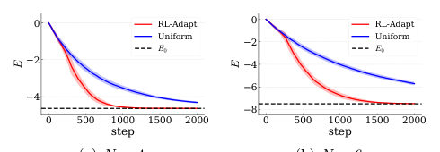
<figcaption class="paper-figure-caption"><b>Fig 2.</b> FIG. 2. Energy as a function of time for the two-timescale re- inforcement learning dissipative algorithm applied to the 1D XY model with (a) 4 sites and (b) 6 sites. Plotted curves are averages over 50 realizations of the algorithm, with the shaded regions corresponding to one standard deviation. Hamilto- nian parameters are J = 1, h = −0.7. RL parameters are nω = 40, η = 2.0, γfast = 40/n and γslow = 2/n.</figcaption>
</figure>
<figure class="paper-figure-card">
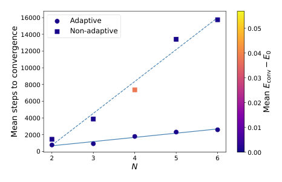
<figcaption class="paper-figure-caption"><b>Fig 3.</b> FIG. 3. Average steps to ground state convergence as a func- tion of system size for the 1D XY-model. Solid and dashed lines are linear best fits for the RL-Adapt and non-adaptive implementations respectively. The color scale gives the mean error in the converged ground state energy. Hamiltonian pa- rameters are J = 1, h = −0.7. RL parameters are nω = 40, η = 2.0, γfast = 40/ntot and γslow = 2/ntot.</figcaption>
</figure>
<figure class="paper-figure-card">
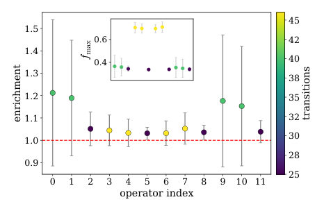
<figcaption class="paper-figure-caption"><b>Fig 4.</b> FIG. 5. Average enrichment (defined as the factor by which the probability mass assigned to aligned pairs exceeds the uniform distribution) over 50 shots of the RL-Adapt dissi- pative algorithm for the 4-site XY model with an operator pool, A, consisting of each single-qubit Pauli operator. The color scale indicates the number of eigenstate transitions in- duced by each operator. The dashed red line indicates the baseline enrichment expected from a uniform assignment of probability mass. The error bars indicate one standard devi- ation. The inset plot provides the enrichment normalized by the enrichment ceiling Nω/Ntarget. Hamiltonian parameters are J = 1, h = −0.7. RL parameters are nω =...</figcaption>
</figure>
<figure class="paper-figure-card">
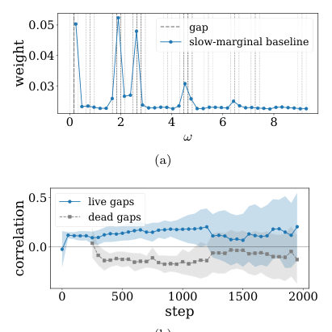
<figcaption class="paper-figure-caption"><b>Fig 5.</b> FIG. 4. (a) Average final ω distribution weights for the slow baseline marginal overlaid with the spectral gaps of HS for the XY-model with N = 4. The blue dots show the weights from the learned, slow-timescale RL baseline (b in Eq. (11)) for choosing the corresponding ω, while the dashed lines show energy gaps of the problem Hamiltonian, ∆u,v for all energy eigenstates |ψu⟩and |ψv⟩. (b) Average correlation between ω values with above-baseline weight and gaps corresponding to feasible “live” (blue) or infeasible “dead” (gray) transitions in ρS as a function of time step. The shaded region corresponds to one standard deviation. In both panels, averages are taken over 50 shots of the...</figcaption>
</figure>
</div>

<p><strong>Summary.</strong> This paper introduces RL-Adapt, an adaptive algorithm that uses reinforcement learning to optimize the parameters of a dissipative quantum simulation for ground state preparation. By learning which system-bath interactions are most effective at driving energy dissipation, RL-Adapt achieves significantly faster and more robust convergence compared to random or non-adaptive methods. This represents a powerful ML-driven tool for simulating open quantum systems.</p>
<p><strong>Why it may be interesting.</strong> This work directly addresses the practical implementation challenges of simulating open quantum dynamics, providing a machine learning-driven optimization layer to enhance convergence for state preparation protocols relevant to quantum hardware.</p>
<details>
<summary>Detailed structure</summary>
<p><strong>Main problem.</strong> The primary goal is the efficient preparation of the ground state of many-body quantum systems using dissipative dynamics.</p>
<p><strong>Main result.</strong> The proposed RL-Adapt algorithm significantly reduces convergence times and successfully finds the ground state even when non-adaptive methods fail due to suboptimal operator selection.</p>
<p><strong>Method.</strong> The authors employ single-shot reinforcement learning (RL) to adaptively optimize the selection of the ancilla frequency and system-bath interaction operator during the dissipative evolution.</p>
<p><strong>Model / system.</strong> The system is an open quantum system undergoing thermalization, modeled by coupling the system to a simulated low-temperature environment via a single ancilla qubit. The dynamics are governed by a collisional model.</p>
<p><strong>Key observables.</strong> Energy decrease expectation value (used for the RL reward function), convergence time, and the correlation between learned weights and spectral gaps.</p>
<p><strong>Important parameters / regimes.</strong> The system Hamiltonian (e.g., 1D XY-model), the RL learning rate parameters (fast/slow residuals), and the energy gap tolerance ($\delta$).</p>
<p><strong>Assumptions / limitations.</strong> The success of the algorithm relies on the ability of the operator pool to connect all occupied initial energy eigenstates to the ground state, and the RL framework assumes that optimizing energy dissipation leads to ground state convergence.</p>
<p><strong>Figures summary.</strong> Figures illustrate the collisional model, the quantum circuit for one time step, and the schematic of the RL-based adaptive algorithm. Later figures compare convergence rates and show correlation analyses between learned weights and spectral gaps.</p>
<p><strong>Paper structure.</strong> The paper introduces the dissipative algorithm, details the limitations of non-adaptive approaches, proposes the RL-Adapt framework using two-timescale RL, and validates its performance by showing faster convergence and analyzing the learned spectral information via correlation and enrichment diagnostics.</p>
</details>
<details>
<summary>Abstract</summary>
<p>Dissipative algorithms approach the problem of ground state preparation by mimicking the natural thermalization of a quantum system in contact with a large, low-temperature thermal environment. The environment can be efficiently simulated by a single ancilla qubit with a variable energy gap that is repeatedly coupled to the system qubits to generate a dissipative channel, and then reset after each interaction. Here we present an adaptive implementation of the dissipative algorithm, RL-Adapt, that uses single-shot reinforcement learning to optimize the selection of ancilla frequency and system-bath interaction operator to maximize energy dissipation without relying on a priori knowledge of the system spectrum. The adaptive implementation results in significantly reduced convergence times and can successfully find the ground state even for non-ideal operator pools that fail to converge using non-adaptive, uniform random operator and ancilla frequency selection.</p>
</details>
<p><sub><a href="#top">↑ back to top</a></sub></p>

<p><a id="paper-2609.31059"></a></p>
<h3 id="collective-order-reorganizes-dissipation-and-powers-an-active-engine"><a href="http://arxiv.org/abs/2609.31059v1">Collective order reorganizes dissipation and powers an active engine</a></h3>
<p><strong>Authors:</strong> Michael Riedl, Vincent Wattiez, Étienne Fodor, Jan Brugués, Francesco Romanò<br>
<strong>Type:</strong> both · <strong>Category:</strong> statistical mechanics · <strong>PDF:</strong> <a href="https://arxiv.org/pdf/2609.31059v1">https://arxiv.org/pdf/2609.31059v1</a><br>
<strong>Analysis basis:</strong> full PDF text, analyzed in chunks
<strong>Topic relevance:</strong> <code>driven-dissipative phase transition</code> <strong>3/5</strong> · <code>non-equilibrium universality</code> <strong>3/5</strong> · <code>Frenkel-Kontorova</code> <strong>1/5</strong> · <code>correlated / nonlocal dissipation</code> <strong>1/5</strong></p>
<div class="figure-strip-hint">↔ Scroll figures horizontally</div>
<div class="paper-figures-scroll">
<figure class="paper-figure-card">
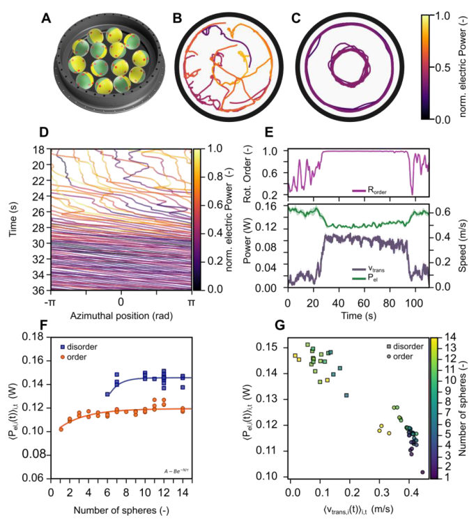
<figcaption class="paper-figure-caption"><b>Fig 1.</b> Fig. 1. The transition to ordered motion reduces energy consumption and increases translational velocity. (A) Schematic of the active-sphere system in a circular confinement (𝑅𝑐𝑜𝑛𝑓= 180 𝑚𝑚). Representative 6𝑠 trajectories in the (B) disordered state and (C) ordered state (𝑁𝑠𝑝ℎ𝑒𝑟𝑒𝑠= 14). (D) Space-time representation showing the azimuthal position of the active spheres over time. The transition from irregular trajectories to bands with constant slope marks the transition from disordered to ordered motion (𝑁𝑠𝑝ℎ𝑒𝑟𝑒𝑠= 14). (B, C, D) Colors show normalized electrical input power which decreases during transition. (E) Time series from a representative experiment (𝑁𝑠𝑝ℎ𝑒𝑟𝑒𝑠= 12) showing (Top)...</figcaption>
</figure>
<figure class="paper-figure-card">
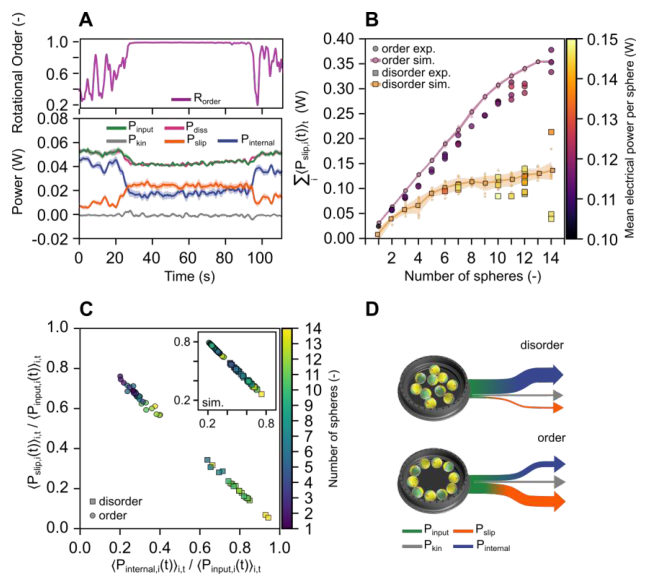
<figcaption class="paper-figure-caption"><b>Fig 2.</b> Fig. 2. Collective ordering reorganizes dissipation from internal to external pathways. (A) Representative power-budget time series (𝑁𝑠𝑝ℎ𝑒𝑟𝑒𝑠= 12) during the transition from disordered to ordered motion, showing (Top) rotational order and (Bottom) input power (𝑃𝑖𝑛𝑝𝑢𝑡), total dissipation (𝑃𝑑𝑖𝑠𝑠), kinetic power (𝑃𝑘𝑖𝑛), slip dissipation (𝑃𝑠𝑙𝑖𝑝), and internal dissipation (𝑃𝑖𝑛𝑡𝑒𝑟𝑛𝑎𝑙). (B) Total slip dissipation increases linearly with increasing number of active spheres in the ordered state both in experiments and simulations. (C) Ordered (circles) and disordered (squares) states separate into distinct dissipation regimes, with the ordered state characterized by greater slip dissipation and...</figcaption>
</figure>
<figure class="paper-figure-card">
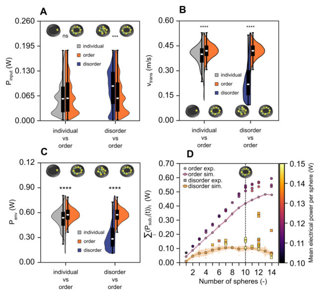
<figcaption class="paper-figure-caption"><b>Fig 3.</b> Fig. 3. Ordered collectives move faster and increase the mechanically transferable power to the environment without increasing input power. (A) Distributions of input power for isolated spheres and for spheres in disordered and ordered collective states. (B) Distributions of translational speed for the same three conditions show a significant increase of the collective compared to the isolated spheres. (C) The ordered collective has a significantly higher transferable power to the environment compared to isolated or disordered collectives. (D) The total transferable power increases with the number of spheres. Colors indicate the mean electrical input power per sphere. An optimum between...</figcaption>
</figure>
<figure class="paper-figure-card">
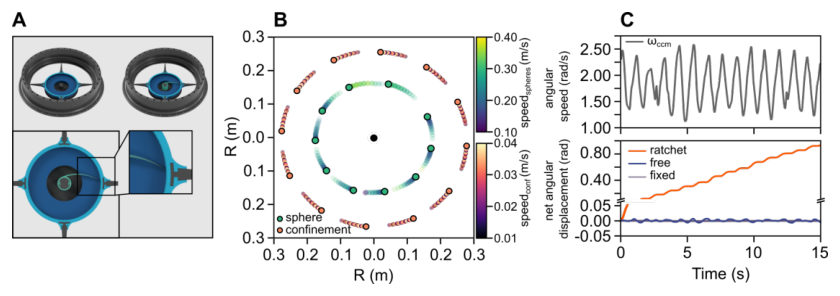
<figcaption class="paper-figure-caption"><b>Fig 4.</b> Fig. 4. A mechanical ratchet converts collective forcing into directional rotation of the confinement. (A) Schematic of the ratchet mechanism. (Top left) Confinement without pawl. (Top right) Confinement with pawl. (Bottom) Top view showing the ratchet and the interaction between the tooth geometry and the pawl. (B) Sphere and confinement marker trajectories. (C) (Top) Angular velocity of the collective center of mass for the ensemble of the active spheres. (Bottom) Net angular displacement of a fixed confinement, the oscillating motion of a freely rotating confinement on the ratchet mechanism without a pawl, and the sustained rotation of the confinement on the ratchet mechanism with the...</figcaption>
</figure>
<figure class="paper-figure-card">
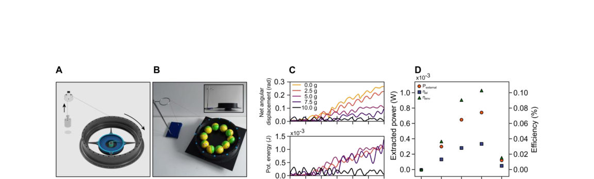
<figcaption class="paper-figure-caption"><b>Fig 5.</b> Fig. 5. The ordered collective performs mechanical work lifting an external load. (A) Schematic of the active engine, in which rotation of the confinement is coupled to a pulley that lifts a suspended mass. (B) Photograph of the experimental realization. (C) (Top) Net angular displacement of the confinement over time for different applied loads. (Bottom) The corresponding increase in gravitational potential energy of the lifted mass. Increasing the external load reduces the displacement per forcing cycle, but the corresponding gain in potential energy stays constant until the rotation stalls. (D) Extracted mechanical power and efficiencies as a function of the external load.</figcaption>
</figure>
</div>

<p><strong>Summary.</strong> This work experimentally investigates how collective order emerges in active matter systems by performing a detailed power budget analysis. It demonstrates that the transition to an ordered state reorganizes energy dissipation, shifting energy loss to the environment. This reorganization allows the collective motion to function as a measurable active engine capable of performing external mechanical work.</p>
<p><strong>Why it may be interesting.</strong> The concept of harnessing collective energy reorganization to perform directed work is highly relevant to non-equilibrium statistical mechanics and active matter theory, providing quantitative metrics for state transitions beyond simple energy conservation.</p>
<details>
<summary>Detailed structure</summary>
<p><strong>Main problem.</strong> The study aims to understand how energy consumption and dissipation change when motile active matter systems transition between disordered and ordered collective states.</p>
<p><strong>Main result.</strong> The transition to an ordered state reorganizes dissipation pathways, shifting energy loss from internal friction to external slip, which allows the collective motion to power an active engine capable of performing mechanical work.</p>
<p><strong>Method.</strong> The researchers used a minimal experimental system of synthetic motile spheres to perform time-resolved power-budget characterization, linking energy input, dissipation, and mechanical work output.</p>
<p><strong>Model / system.</strong> The system consists of synthetic motile spheres, each equipped with an unbalanced motor, which exhibit collective transitions between disordered and ordered states. The analysis involves measuring electrical power input, kinetic energy, and decomposing total dissipation into internal and external slip components.</p>
<p><strong>Key observables.</strong> Locomotion efficiency, instantaneous electrical power ($P_{el}$), kinetic energy ($P_{kin}$), internal dissipation ($P_{internal}$), external slip dissipation ($P_{slip}$), and measurable mechanical work output.</p>
<p><strong>Important parameters / regimes.</strong> Motor parameters, restitution coefficient ($\epsilon$), external load applied to the engine, and the degree of collective order (e.g., rotational order parameter).</p>
<p><strong>Assumptions / limitations.</strong> The analysis relies on the power balance equation ($P_{el} = P_{diss} + P_{kin}$), and the engine demonstration assumes the collective forcing can be rectified by a mechanical ratchet.</p>
<p><strong>Figures summary.</strong> Figures illustrate the transition visualization (kymographs), the decomposition of dissipation pathways (internal vs. slip), the comparison of power budgets between collective and independent spheres, and the final demonstration of the active engine lifting an external load.</p>
<p><strong>Paper structure.</strong> The paper first establishes the energetic challenge in active matter, then presents the experimental setup and power budget measurements to show energy reorganization upon ordering. Finally, it leverages this reorganization to construct and test a mechanical active engine.</p>
</details>
<details>
<summary>Abstract</summary>
<p>Motile active matter systems, from animal groups to synthetic particles, exhibit spontaneous self-organized transitions between disordered and ordered collective states. These transitions are driven by continuous energy injection, yet how energy consumption and dissipation change during these transitions remains poorly understood due to the challenge of measuring individual energetic fluxes. Here, we introduce a minimal experimental system of synthetic motile spheres that enables the first time-resolved power-budget characterization of collective motion. We show that the transition to an ordered state is accompanied by increased locomotion efficiency and a reorganization of dissipation pathways, shifting dissipation from internal friction to external slip with the environment. Leveraging this energetic reorganization, we construct an active engine powered by collective motion, capable of performing mechanical work against an external load. These findings establish energetic fluxes as quantitative observables for understanding collective state transitions and demonstrate how collective order can be harnessed for work extraction in active matter.</p>
</details>
<p><sub><a href="#top">↑ back to top</a></sub></p>

<p><a id="paper-2609.30496"></a></p>
<h3 id="disentangling-expressibility-symmetry-protection-and-hardware-noise-in-variational-quantum-simulation-of-the-two-flavor-schwinger-model"><a href="http://arxiv.org/abs/2609.30496v1">Disentangling Expressibility, Symmetry Protection, and Hardware Noise in Variational Quantum Simulation of the Two-Flavor Schwinger Model</a></h3>
<p><strong>Authors:</strong> Karthikeya Machiraju, Krishna Sujith, Kaustav Bhowmick<br>
<strong>Type:</strong> theory · <strong>Category:</strong> quantum information and computing · <strong>PDF:</strong> <a href="https://arxiv.org/pdf/2609.30496v1">https://arxiv.org/pdf/2609.30496v1</a><br>
<strong>Analysis basis:</strong> full PDF text, analyzed in chunks
<strong>Topic relevance:</strong> <code>analog quantum simulation</code> <strong>3/5</strong> · <code>QC/QI experiment</code> <strong>2/5</strong> · <code>Keldysh / 2PI / non-Gaussian methods</code> <strong>1/5</strong> · <code>methods for driven-dissipative</code> <strong>1/5</strong> · <code>quantum measurements</code> <strong>1/5</strong></p>
<div class="figure-strip-hint">↔ Scroll figures horizontally</div>
<div class="paper-figures-scroll">
<figure class="paper-figure-card">
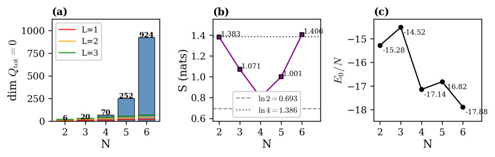
<figcaption class="paper-figure-caption"><b>Fig 1.</b> FIG. 1. Exact-diagonalization baseline (K = 0, x = 16, F = 2), computed in this work. (a) Physical-sector dimension d = 2N N </figcaption>
</figure>
<figure class="paper-figure-card">
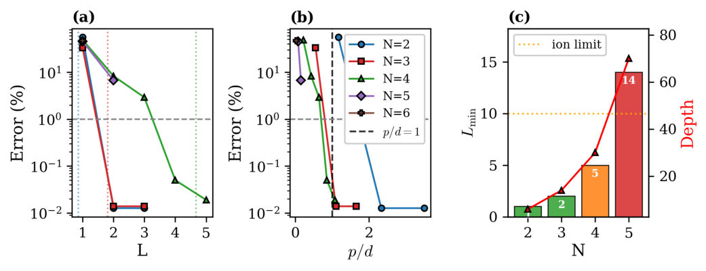
<figcaption class="paper-figure-caption"><b>Fig 2.</b> FIG. 2. Expressibility. (a) Relative energy error versus ansatz layers L; dotted verticals mark Lmin. The crossings for N = 5 and N = 6 lie at L = 14 and L = 41 and are outside the plotted range. (b) The same data collapse onto a single function of p/d, with the error transition at p/d ≈1. (c) Minimum-layer two-qubit depth 4Lmin + 4N −6 for N = 2 to 5, color-coded by trapped-ion feasibility (green: feasible; orange: marginal; red: infeasible). The dashed horizontal line in panels (a) and (b) marks 1% relative error. Symbol and color coding in panel (a) is shared with panel (b).</figcaption>
</figure>
<figure class="paper-figure-card">
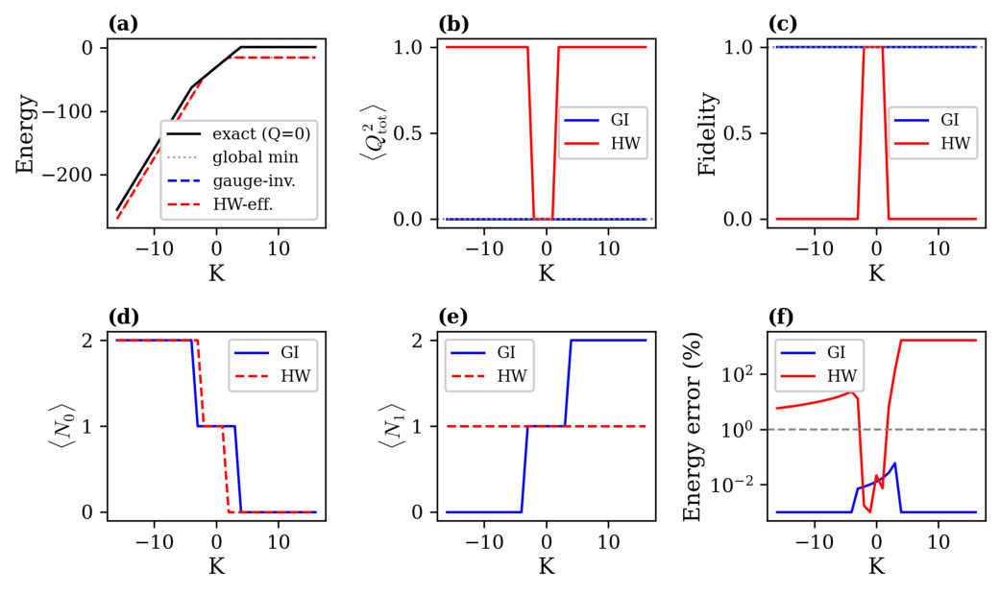
<figcaption class="paper-figure-caption"><b>Fig 3.</b> FIG. 3. Gauge-invariant (GI) vs. hardware-efficient (HW) ansatz across the chemical potential at N = 2, L = 2 (33-point sweep). (a) Ground-state energy: the HW result drops below the physical ground state outside the window K ∈[−2, 1] (charge- sector leakage), while GI tracks it, and the global minimum over all charge sectors is shown for reference. (b) Global-charge violation ⟨Q2 tot⟩: identically zero for GI, and unity for HW outside the window K ∈[−2, 1]. (c) Fidelity with the physical ground state: unity for GI, collapsing to zero for HW. (d) Flavor-0 particle number, integer-valued and stepping down from 2 to 0 as K increases for GI, displaced for HW. (e) Flavor-1 particle number,...</figcaption>
</figure>
<figure class="paper-figure-card">
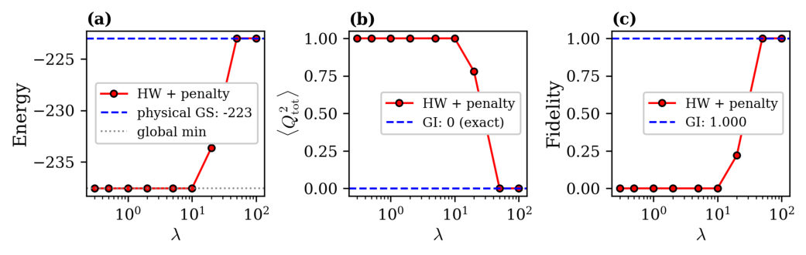
<figcaption class="paper-figure-caption"><b>Fig 4.</b> FIG. 4. Penalty-term sweep for the hardware-efficient ansatz at K = −14, N = 2, L = 2. (a) Recovered energy versus λ: it can reach the physical ground state only for λ ≳16.5, the charge-sector gap of Eq. (8) (dash-dotted), and sits at the global minimum below that. (b) Charge-sector leakage ⟨Q2 tot⟩versus λ, falling from unity to zero across the same crossover, against the identically zero GI reference. (c) Fidelity with the physical ground state versus λ, rising from zero to unity at the crossover, against the GI reference.</figcaption>
</figure>
<figure class="paper-figure-card">
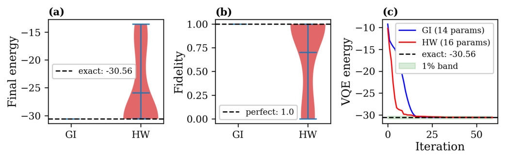
<figcaption class="paper-figure-caption"><b>Fig 5.</b> FIG. 5. Optimization stability and convergence (K = 0, N = 2, L = 2). Across 20 random restarts the gauge-invariant ansatz is deterministic (σE = 1.0 × 10−4, mean fidelity 0.99) while the hardware-efficient ansatz scatters (σE = 5.38, mean fidelity 0.84): the (a) final-energy spread and (b) fidelity spread collapse to a line at the exact value for the gauge-invariant ansatz but spread widely for the hardware-efficient one. (c) Representative convergence traces: the gauge-invariant optimizer reaches the ground state in ∼10 iterations, whereas the hardware-efficient optimizer plateaus in nonphysical regions before descending to the physical ground state.</figcaption>
</figure>
</div>

<p><strong>Summary.</strong> This work investigates the scalability of quantum simulation for the two-flavor Schwinger model using VQE. By analyzing the interplay between circuit expressibility, symmetry constraints, and hardware noise across increasing lattice sizes, the authors conclude that hardware noise is the primary bottleneck. They establish N=3 as a near-term, achievable target for trapped-ion quantum computers.</p>
<p><strong>Why it may be interesting.</strong> It provides a concrete, quantitative benchmark for assessing the feasibility of simulating complex lattice gauge theories on near-term quantum hardware, directly addressing the interplay between algorithmic design and physical hardware limitations.</p>
<details>
<summary>Detailed structure</summary>
<p><strong>Main problem.</strong> To determine the limiting factor—expressibility, symmetry protection, or hardware noise—when using Variational Quantum Eigensolver (VQE) to simulate the two-flavor Schwinger model.</p>
<p><strong>Main result.</strong> The binding constraint limiting simulation size at reachable lattice sites is identified as hardware noise, not circuit expressibility or trainability. The study pinpoints N=3 as the immediately viable extension for current trapped-ion quantum hardware.</p>
<p><strong>Method.</strong> The authors employ VQE on a mapped Hamiltonian, systematically varying the lattice size (N) and comparing the energy error under different noise models and ansatz constraints.</p>
<p><strong>Model / system.</strong> The physical system is the two-flavor Schwinger model (QED in 1+1 dimensions), mapped to a qubit Hamiltonian using the Kogut–Susskind staggered formulation. The simulation is performed on a lattice of size N, restricted to the charge-neutral physical subspace.</p>
<p><strong>Key observables.</strong> Energy error, ratio of variational parameters to physical sector dimension (p/d), normalized gradient variance, and entanglement entropy.</p>
<p><strong>Important parameters / regimes.</strong> Lattice size N (tested up to 6), circuit depth L, and the degree of hardware noise (e.g., 1.00% depolarizing noise).</p>
<p><strong>Assumptions / limitations.</strong> The analysis assumes a consistent framework to compare the three failure mechanisms (expressibility, symmetry protection, noise) across varying lattice sizes.</p>
<p><strong>Figures summary.</strong> Figures compare the combinatorial growth of the physical sector dimension against the linear growth of the parameter budget, and show the collapse of the energy error onto a function of p/d.</p>
<p><strong>Paper structure.</strong> The paper systematically analyzes the scaling of VQE for the Schwinger model, first establishing the theoretical limits set by expressibility, then quantifying the protection afforded by charge conservation, and finally demonstrating that hardware noise dominates the error budget at larger lattice sizes.</p>
</details>
<details>
<summary>Abstract</summary>
<p>Existing quantum simulations of the two-flavor Schwinger model have run at a single lattice size, and it is not known how far the variational approach can be pushed or which weakness stops it first. Following the model from N = 2 to 6 staggered lattice sites, we find that the binding constraint at reachable sizes is hardware noise rather than circuit expressibility or trainability, and identify N = 3 as the immediately viable extension of existing trapped-ion experiments. The energy error of a charge-conserving ansatz collapses onto one function of p/d, the ratio of variational parameters to physical-sector dimension, and falls by more than two orders of magnitude as p/d rises through order unity, giving the expressibility condition L(4N - 1) &gt;= binom(2N,N) for L circuit layers. The condition is local in chemical potential: at N = 3 the layer count sufficient at zero chemical potential leaves a 74.38% error near the first-order boundary, while one further layer reaches 0.08%. Charge conservation also protects trainability and prevents charge-sector leakage: as the qubit count doubles from 4 to 8, the normalized gradient variance falls to 1/3.56 of its starting value for the constrained ansatz, versus 1/13.57 for an unconstrained circuit. Comparing a global contraction with per-gate local noise, a fixed-parameter control shows that the noise model, not whether the optimizer runs inside the noisy loop, sets how strongly noise degrades the first-order transition. At N = 4, a noiseless control reaches 0.12% mean error, whereas the same circuit at 1.00% depolarizing noise reaches 25.69 to 52.81%.</p>
</details>
<p><sub><a href="#top">↑ back to top</a></sub></p>

<p><a id="paper-2609.31151"></a></p>
<h3 id="phase-accumulating-hyperfine-strain-sensing-with-rare-earth-ion-phase-memories"><a href="http://arxiv.org/abs/2609.31151v1">Phase-accumulating hyperfine strain sensing with rare-earth-ion phase memories</a></h3>
<p><strong>Authors:</strong> Mustafa Gündoğan<br>
<strong>Type:</strong> both · <strong>Category:</strong> other · <strong>PDF:</strong> <a href="https://arxiv.org/pdf/2609.31151v1">https://arxiv.org/pdf/2609.31151v1</a><br>
<strong>Analysis basis:</strong> full PDF text, analyzed in chunks
<strong>Topic relevance:</strong> <code>quantum measurements</code> <strong>3/5</strong> · <code>quantum optics experiment</code> <strong>3/5</strong> · <code>interference shaping light</code> <strong>2/5</strong></p>
<div class="figure-strip-hint">↔ Scroll figures horizontally</div>
<div class="paper-figures-scroll">
<figure class="paper-figure-card">
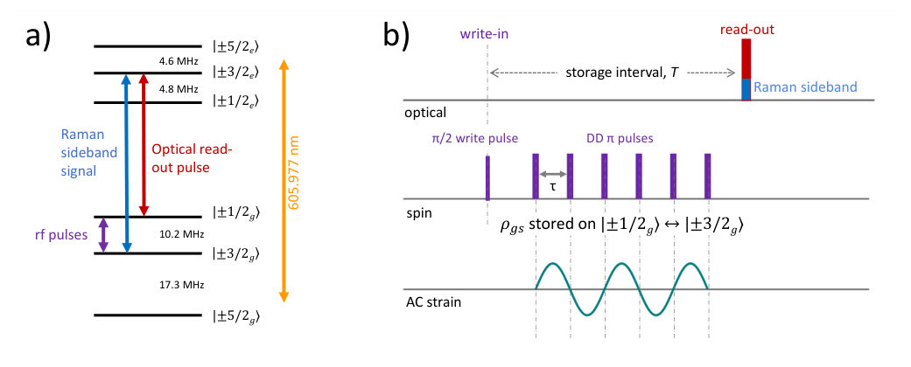
<figcaption class="paper-figure-caption"><b>Fig 1.</b> FIG. 1. Proposed strain measurement scheme. (a) Relevant Pr3+:Y2SiO5 hyperfine levels and optical transitions near 605.977 nm. The ground state transition | ± 1/2g⟩↔| ± 3/2g⟩is controlled by rf fields. An optical read field on | ± 1/2g⟩↔| ± 3/2e⟩ generates a coherent Raman sideband on | ± 3/2g⟩↔| ± 3/2e⟩. (b) Timing sequence. Before the sequence shown, optical pumping polarizes the addressed spectral class, ideally into | ± 1/2g⟩. A phase-controlled rf π/2 pulse with phase ϕw creates the ground state coherence ρgs. During the storage interval, synchronized rf π pulses provide dynamical decoupling while the ac strain contributes the accumulated phase Φϵ. The final optical read field generates the...</figcaption>
</figure>
<figure class="paper-figure-card">
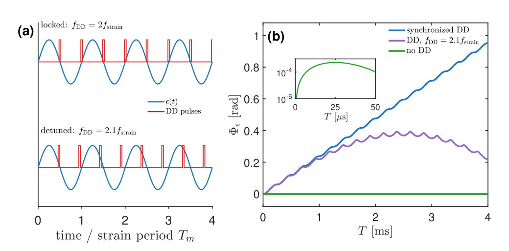
<figcaption class="paper-figure-caption"><b>Fig 2.</b> FIG. 2. Synchronization and phase accumulation. (a) The normalized ac strain (blue) and finite-width rf π-pulse envelope (red), drawn in the same waveform convention as the accompanying time-domain simulation. Here fDD denotes the π-pulse repetition rate, so the locked condition is fDD = 2fstrain; the lower row shows the slip produced by the 5% mismatch fDD = 2.1fstrain. The illustrated pulse duty cycle is tπfDD = 0.08. During each pulse the sensing function is set to zero as a pulse-blanking approximation, rather than a full driven Bloch-equation treatment. (b) Representative accumulated strain phase for Gsϵ0 = 60 Hz and fstrain = 2 kHz using the same finite-pulse model. Synchronized DD...</figcaption>
</figure>
<figure class="paper-figure-card">
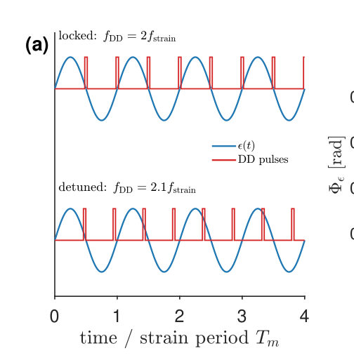
<figcaption class="paper-figure-caption"><b>Fig 3.</b> Figure 3 shows the matched-DD optical shot-noise strain floor as a function of storage time. For fixed</figcaption>
</figure>
<figure class="paper-figure-card">
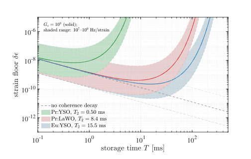
<figcaption class="paper-figure-caption"><b>Fig 4.</b> FIG. 3. Single-shot strain sensitivity in the presence of coher- ence decay. The grey dashed line shows the ideal limit with- out coherence decay. The coloured curves assume exponential coherence decay, C(T) = exp(−T/T2), using representative zero-field coherence times for Pr:YSO (T2 = 0.50 ms) [38], Pr:LaWO (T2 = 8.4 ms) [3], and Eu:YSO (T2 = 15.5 ms) [39]. For Pr:LaWO, T2 = 8.4 ms is the coherence-amplitude life- time corresponding to the measured 4.2 ms 1/e retrieval inten- sity decay under CPMG. Solid curves use Gs = 108 Hz/strain, while the shaded regions span Gs = 107–109 Hz/strain. We assume Nsb(0) = 106, V = 1, and ideal homodyne readout.</figcaption>
</figure>
</div>

<p><strong>Summary.</strong> This paper outlines an advanced quantum sensing protocol to measure strain effects on hyperfine transitions in rare-earth-ion crystals. It uses long-lived hyperfine coherence, enhanced by dynamical decoupling pulses, to accumulate a phase proportional to the applied strain. The method is theoretically derived and compared against other quantum memory readout techniques, providing a route to understanding strain-induced couplings in solid-state quantum systems.</p>
<p><strong>Why it may be interesting.</strong> This work is highly relevant to AMO physics and quantum optics as it details a sophisticated quantum sensing protocol that leverages long-lived coherence in solid-state systems, combining concepts from quantum memory, dynamical decoupling, and high-precision spectroscopy.</p>
<details>
<summary>Detailed structure</summary>
<p><strong>Main problem.</strong> The paper addresses the challenge of developing a sensitive method to measure strain-induced shifts in the ground state hyperfine transitions of rare-earth-ion-doped (REID) crystals, a measurement difficult via conventional spectroscopy.</p>
<p><strong>Main result.</strong> A protocol is proposed that uses phase-accumulating hyperfine coherence, enhanced by synchronized dynamical decoupling pulses, to measure the strain-dependent hyperfine coupling coefficient ($G_s$).</p>
<p><strong>Method.</strong> The method involves optically preparing a hyperfine state, creating a transverse coherence via an rf $\pi/2$ pulse, allowing the coherence to evolve under an oscillating strain field, and finally reading out the accumulated phase using Raman heterodyne detection.</p>
<p><strong>Model / system.</strong> The system is based on rare-earth ions (e.g., Pr$^{3+}$) in crystals, modeled using a Hamiltonian incorporating crystal field, hyperfine, Zeeman, and strain terms. The strain dependence is derived by expanding effective quadrupole and Zeeman tensors around an operating point.</p>
<p><strong>Key observables.</strong> The primary observable is the accumulated phase ($\Phi_{\epsilon}$), which is proportional to the strain ($\epsilon_a$) via the measurable strain coefficient ($G_s$).</p>
<p><strong>Important parameters / regimes.</strong> The protocol utilizes dynamical decoupling (DD) pulses to ensure the accumulated phase grows linearly with time under AC strain, and the measurement is optimized near a Zero-First-Order-Zeeman (ZEFOZ) point.</p>
<p><strong>Assumptions / limitations.</strong> The analysis assumes the ability to perform a differential measurement to isolate the strain phase, and comparisons between readout schemes rely on specific scaling laws and approximations regarding coherence amplitude.</p>
<p><strong>Figures summary.</strong> Figure 1 illustrates the entire measurement sequence: optical pumping, rf $\pi/2$ write pulse, the storage interval with DD pulses and AC strain, and the final optical read field generating the Raman sideband.</p>
<p><strong>Paper structure.</strong> The paper moves from defining the physical problem and Hamiltonian to detailing the experimental protocol (preparation, evolution, readout). It then provides theoretical derivations for the strain coupling tensors and compares the sensitivity limits of the proposed RF-write/Raman-read scheme against alternative optical memory techniques.</p>
</details>
<details>
<summary>Abstract</summary>
<p>Long-lived hyperfine coherences in rare-earth-ion crystals provide controlled phase evolution windows for metrology. We use this resource to propose an experimental protocol for accessing strain shifts of ground state hyperfine transitions in non-Kramers rare-earth-ion doped (REID) materials, a quantity that is difficult to access directly with conventional spectroscopic methods. Starting from the crystal field Hamiltonian, we relate the response to strain-dependent effective quadrupole and Zeeman tensors, including changes in electronic wave functions, virtual electronic admixtures, and the bare nuclear quadrupole interaction. The protocol optically prepares a selected hyperfine class, uses a phase-controlled rf $π/2$ pulse to create the sensing coherence, and applies synchronized dynamical decoupling pulses during the phase evolution interval so that a coherent ac strain drive accumulates phase rather than averaging away. The accumulated phase is then retrieved by Raman heterodyne readout. The resulting framework provides a route to understanding strain-induced hyperfine couplings in non-Kramers REID systems.</p>
</details>
<p><sub><a href="#top">↑ back to top</a></sub></p>

<p><a id="paper-2609.30970"></a></p>
<h3 id="large-deviations-theory-for-growing-chemical-reaction-networks"><a href="http://arxiv.org/abs/2609.30970v1">Large-deviations theory for growing chemical reaction networks</a></h3>
<p><strong>Authors:</strong> Praful Gagrani, Ignacio Madrid, Tetsuya J Kobayashi<br>
<strong>Type:</strong> theory · <strong>Category:</strong> statistical mechanics · <strong>PDF:</strong> <a href="https://arxiv.org/pdf/2609.30970v1">https://arxiv.org/pdf/2609.30970v1</a><br>
<strong>Analysis basis:</strong> full PDF text, analyzed in chunks
<strong>Topic relevance:</strong> <code>Keldysh / 2PI / non-Gaussian methods</code> <strong>3/5</strong> · <code>analog quantum simulation</code> <strong>1/5</strong> · <code>driven-dissipative phase transition</code> <strong>1/5</strong> · <code>methods for driven-dissipative</code> <strong>1/5</strong> · <code>non-equilibrium universality</code> <strong>1/5</strong></p>
<div class="figure-strip-hint">↔ Scroll figures horizontally</div>
<div class="paper-figures-scroll">
<figure class="paper-figure-card">
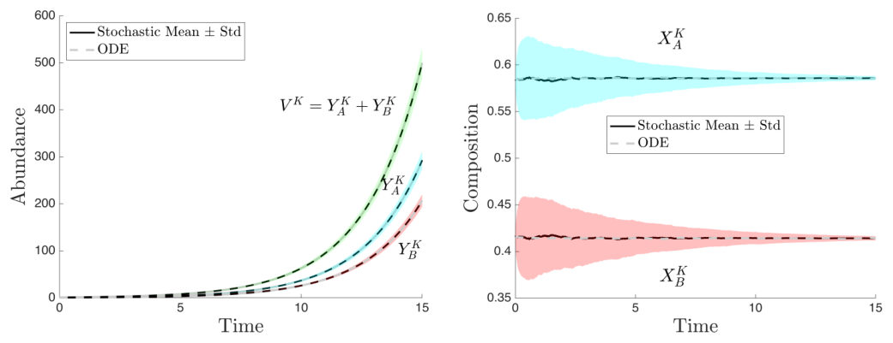
<figcaption class="paper-figure-caption"><b>Fig 1.</b> FIG. 1: Abundance and composition dynamics for the two-species autocatalytic network. We simulated 2000 stochastic trajectories with system-scale parameter K = 101, initialized at (nA, nB) = (59, 42). The abundance variables and total volume grow exponentially, while the composition remains near the attracting balanced-growth composition. The composition variance decreases as the volume grows.</figcaption>
</figure>
<figure class="paper-figure-card">
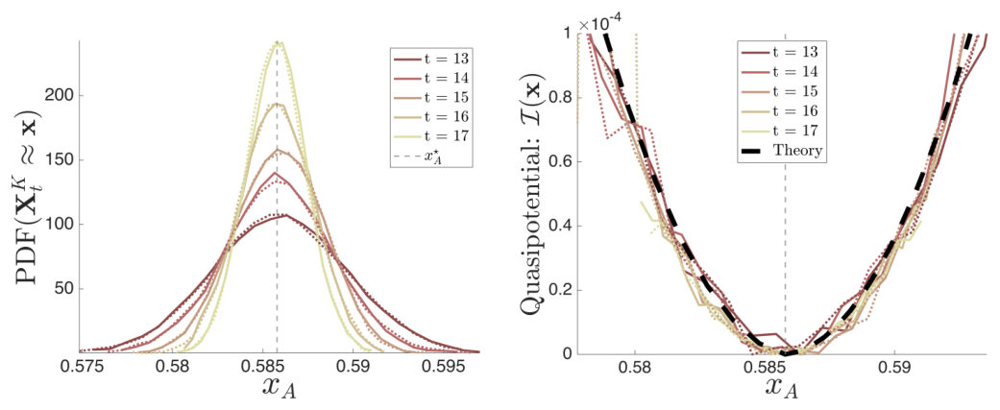
<figcaption class="paper-figure-caption"><b>Fig 2.</b> FIG. 2: Composition distributions and quasipotential for the two-species autocatalytic network. The left panel shows composition probability densities at increasing volumes or nominal balanced-growth times. The right panel shows the empirical quasipotential, −log(PDF)/(Kv), overlaid with the solution of Eq. (36). Solid curves correspond to fixed-volume sampling; dotted curves correspond to physical-time sampling. Their close agreement in this example indicates that volume fluctuations are subleading for the displayed compositions and times.</figcaption>
</figure>
<figure class="paper-figure-card">
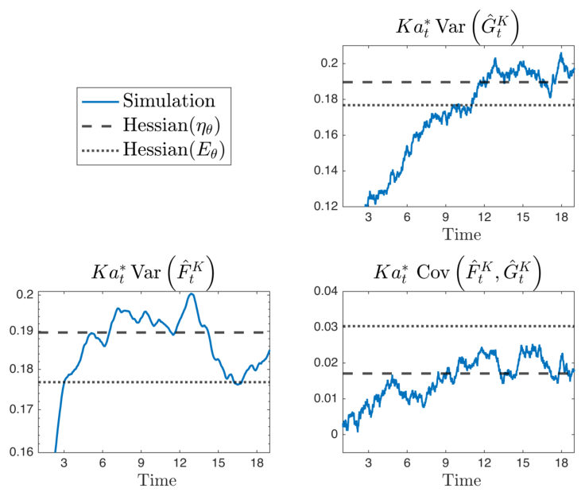
<figcaption class="paper-figure-caption"><b>Fig 3.</b> FIG. 3: Variances and covariance of the accumulated-volume-averaged observables in Eq. (36). The variance and covariance at each time t are scaled by the deterministic accumulated-volume level a⋆ t = v0(eΛt −1)/Λ. The theoretical predictions are obtained from the Hessian of the SCGF ηθ. An approximation using the Hessian of the fixed point energy Eθ is also shown.</figcaption>
</figure>
<figure class="paper-figure-card">
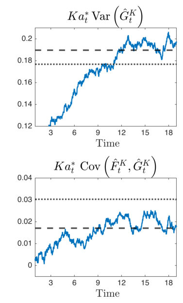
<figcaption class="paper-figure-caption"><b>Fig 4.</b> Figure 4 shows the same fluctuations without rescal- ing and compares them with the conventional time- averaged estimators defined in Sec. II D. Both averag- ing schemes approach the same balanced-growth means, but their variances have different asymptotic behavior. The accumulated-volume estimators weight later times more strongly, when the system is larger and more re- action events are observed, and their covariances decay on the scale 1/(KAt). In the simulations this leads to substantially smaller long-time fluctuations than for the corresponding time-averaged estimators.</figcaption>
</figure>
<figure class="paper-figure-card">
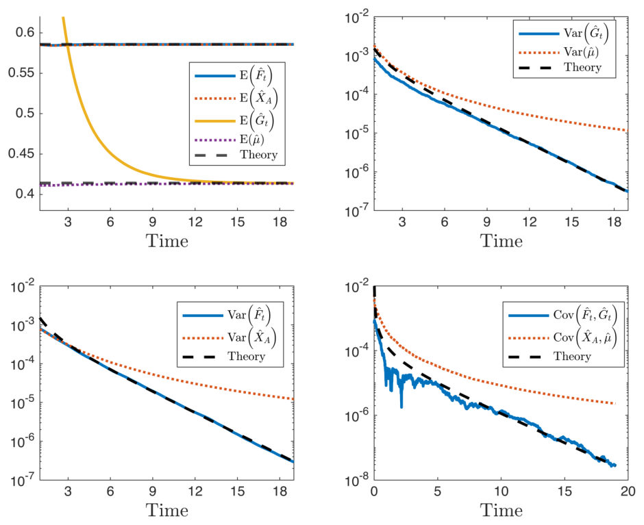
<figcaption class="paper-figure-caption"><b>Fig 5.</b> FIG. 4: Fluctuations of composition and growth-rate estimators in the two-species autocatalytic network. Accumulated-volume-averaged estimators are compared with the theoretical covariance prediction and with the corresponding conventional time-averaged estimators. Both averaging schemes converge to the same balanced-growth means, but their fluctuations decay differently: the accumulated-volume estimators decay on the accumulated-volume scale, whereas the time-averaged estimators decay O(t−1) in physical time. For the parameters shown, the accumulated-volume estimators consequently attain smaller variances at long times.</figcaption>
</figure>
</div>

<p><strong>Summary.</strong> This paper establishes a rigorous large-deviation theory for stochastic chemical reaction networks that undergo exponential growth. It decomposes the system state into volume and composition, showing that composition fluctuations are governed by a quasipotential. The theory provides a powerful stochastic null model for interpreting single-cell heterogeneity in biochemical systems.</p>
<p><strong>Why it may be interesting.</strong> While focused on chemical kinetics, the mathematical machinery—large deviations, Hamilton-Jacobi equations, and fluctuation theorems—is highly relevant to non-equilibrium statistical mechanics in open quantum systems.</p>
<details>
<summary>Detailed structure</summary>
<p><strong>Main problem.</strong> Developing a large-deviation and fluctuation theory for stochastic Chemical Reaction Networks (CRNs) operating in a growing, non-stationary regime.</p>
<p><strong>Main result.</strong> The composition fluctuations satisfy a large-deviation principle governed by a quasipotential derived from a contact Hamilton-Jacobi equation, and observable covariances decay with accumulated-volume.</p>
<p><strong>Method.</strong> The theory decomposes the stochastic abundance into volume and composition coordinates, utilizing large-deviation theory and variational methods.</p>
<p><strong>Model / system.</strong> The model is a stochastic CRN, exemplified by a coarse-grained cellular growth model, where the state is tracked by normalized abundance, volume, and composition.</p>
<p><strong>Key observables.</strong> Composition quasipotential, growth-rate fluctuations, and covariances of accumulated-volume-averaged observables.</p>
<p><strong>Important parameters / regimes.</strong> The system operates in a supercritical, exponentially growing regime ($\Lambda > 0$), with the fluctuation speed scaling with the accumulated volume.</p>
<p><strong>Assumptions / limitations.</strong> The system exhibits balanced growth, and the reaction rates are assumed to be homogeneous functions of degree one (scalable).</p>
<p><strong>Figures summary.</strong> Figures show empirical quasipotential collapse under volume scaling and confirm the predicted decay scaling for covariances using accumulated-volume estimators.</p>
<p><strong>Paper structure.</strong> The paper introduces the setup, develops the large-deviation theory for composition fluctuations, and then applies the framework to analyze the moments and covariances of accumulated-volume-averaged observables.</p>
</details>
<details>
<summary>Abstract</summary>
<p>Growing biochemical systems are intrinsically noisy, with one important source of stochasticity arising from the discrete reaction events of the underlying biochemical network. Because growing systems do not generally admit stationary abundance distributions, it is unclear how to separate this intrinsic chemical noise from other sources of variability in population and single-cell data. Here we develop a large-deviation theory for exponentially growing stochastic chemical reaction networks by decomposing abundance into volume and composition. In these coordinates, balanced growth corresponds to a stable composition together with exponentially increasing volume. We show that composition fluctuations satisfy a large-deviation principle with speed equal to the volume of the growing system, and the corresponding quasipotential is selected by a solution of the contact Hamilton--Jacobi equation. We also derive a fluctuation theory for accumulated observables and show that their covariances decay with accumulated-volume, rather than with physical time. Applications to a minimal autocatalytic network and a coarse-grained cellular growth model demonstrate how the theory predicts composition quasipotentials, growth-rate fluctuations, and correlations between observables. The framework therefore provides a stochastic null model for single-cell heterogeneity generated by the intrinsic stochasticity of the underlying chemical reaction network.</p>
</details>
<p><sub><a href="#top">↑ back to top</a></sub></p>

<p><a id="paper-2609.31052"></a></p>
<h3 id="measurement-protocol-for-non-adiabatic-geometric-phases-of-floquet-states"><a href="http://arxiv.org/abs/2609.31052v1">Measurement protocol for non-adiabatic geometric phases of Floquet states</a></h3>
<p><strong>Authors:</strong> Carlos Martín-Fernández, Gloria Platero, Sigmund Kohler<br>
<strong>Type:</strong> theory · <strong>Category:</strong> other · <strong>PDF:</strong> <a href="https://arxiv.org/pdf/2609.31052v1">https://arxiv.org/pdf/2609.31052v1</a><br>
<strong>Analysis basis:</strong> full PDF text, analyzed in chunks
<strong>Topic relevance:</strong> <code>quantum measurements</code> <strong>3/5</strong> · <code>analog quantum simulation</code> <strong>2/5</strong> · <code>interference shaping light</code> <strong>1/5</strong> · <code>quantum optics experiment</code> <strong>1/5</strong></p>
<div class="figure-strip-hint">↔ Scroll figures horizontally</div>
<div class="paper-figures-scroll">
<figure class="paper-figure-card">
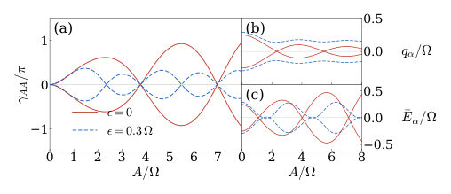
<figcaption class="paper-figure-caption"><b>Fig 1.</b> FIG. 1. Floquet spectrum for detunings ε = 0 (solid red) and ε = 0.3Ω(dashed blue) and tunneling ∆= Ω/2. The panels show the AA phases (a), the quasienergies (b), and the mean energies (c).</figcaption>
</figure>
<figure class="paper-figure-card">

<figcaption class="paper-figure-caption"><b>Fig 2.</b> FIG. 3. Simulation of the protocol sketched in Fig. 2 with prepara- tion in the ground state for tunneling ∆= Ω/2 and various detunings. (a) Phase of the overlap Z (thin lines) compared to the theoretically expected value 2γFB [broad matte line of same color, cf. Fig. 1(a)] for protocol time Tloop = 25T. The detunings are ε = 0 (red) and 0.3Ω(blue). (b,c) Loop fidelity |Z| for detunings ε = 0.0125Ω(b) and 0.3Ω(c) for various protocol times Tloop = NloopT. The vertical dotted lines mark positions of the quasienergy crossings in the ab- sence of detuning.</figcaption>
</figure>
<figure class="paper-figure-card">

<figcaption class="paper-figure-caption"><b>Fig 3.</b> FIG. 2. Protocol for the cancellation of the dynamical phase. After preparation of the qubit in the ground state, the amplitude is ramped up with driving phase θ = 0. After time tramp, the amplitude is kept constant, while the drive phase θ is adiabatically increased during N driving periods until it reaches the value 2π. Next, a σy-pulse is applied, and the parameters are tuned back in the same way. A fi- nal σy-pulse restores the ground state. For Ramsey interference, a σy-pulse is applied initially to create a superposition between ground and excited state. Finally, the populations are measured by tomogra- phy.</figcaption>
</figure>
<figure class="paper-figure-card">

<figcaption class="paper-figure-caption"><b>Fig 4.</b> FIG. 4. (a) Population of the excited state after the protocol with Ramsey pulses for various loop times (symbols) compared to the expectation in Eq. (5). Tunneling and detuning are ∆= 0.5Ωand ε = 0.3Ω, respectively. (b) Theoretically expected value γAA from Eq. (1) (left half) compared to the simulated measurement (right half). The result is independent of the sign of ε due to the sym- metry relation σxH(A,ε,θ)σx = H(A,−ε,θ + π). (c) Visibility of the Ramsey pattern for the simulated measured phase as a function of the detuning and amplitude for Nloop = 25.</figcaption>
</figure>
<figure class="paper-figure-card">

<figcaption class="paper-figure-caption"><b>Fig 5.</b> FIG. 5. Quasienergy gap ∆q in the (ε,A) plane. The dark areas mark accidental degeneracies found for integer detuning [26] and at m-photon resonances for A = 0. There, adiabatic following breaks down.</figcaption>
</figure>
</div>

<p><strong>Summary.</strong> This paper details a novel measurement protocol to experimentally detect the Aharonov-Anandan geometric phase in quantum systems driven periodically (Floquet systems). By adapting spin-echo techniques and utilizing Ramsey interferometry, the authors show how to isolate this non-adiabatic phase from the dominant dynamical phase. This provides a powerful tool for characterizing geometric properties in driven quantum matter.</p>
<p><strong>Why it may be interesting.</strong> This work provides a detailed, experimentally relevant blueprint for measuring non-adiabatic geometric phases in driven quantum systems, bridging the gap between theoretical Floquet theory and measurable quantum optics experiments.</p>
<details>
<summary>Detailed structure</summary>
<p><strong>Main problem.</strong> The paper proposes a concrete measurement protocol for the Aharonov-Anandan (AA) geometric phase associated with Floquet states in periodically driven quantum systems.</p>
<p><strong>Main result.</strong> The protocol successfully links the non-adiabatic AA phase to the adiabatic Floquet-Berry phase, allowing for measurement by adapting spin-echo techniques to cancel dynamical phases.</p>
<p><strong>Method.</strong> The measurement relies on adiabatically ramping the driving parameters and employing a sequence involving $\sigma_y$-pulses (similar to spin-echo) to isolate and measure the accumulated geometric phase via Ramsey interferometry.</p>
<p><strong>Model / system.</strong> The analysis uses a general periodically time-dependent Hamiltonian, illustrated by a driven two-level system (TLS) Hamiltonian, which models the quantum dynamics under periodic driving.</p>
<p><strong>Key observables.</strong> The primary observable is the excitation probability ($P_e$) measured via Ramsey interferometry, which is related to the accumulated phase as $\cos^2(2\gamma_{AA})$.</p>
<p><strong>Important parameters / regimes.</strong> Key parameters include the driving frequency ($\Omega$), the detuning ($\epsilon$), and the time scale of the measurement loop ($T_{	ext{loop}}$).</p>
<p><strong>Assumptions / limitations.</strong> The protocol assumes the ability to perform adiabatic following during parameter changes and requires applying $\pi$-pulses at multiples of the driving period ($t=kT$).</p>
<p><strong>Figures summary.</strong> Figures illustrate the Floquet spectrum, the step-by-step measurement protocol (preparation, phase tuning, $\sigma_y$-pulse), and simulations showing fidelity and excitation probability dependence on detuning and loop time.</p>
<p><strong>Paper structure.</strong> The paper first introduces the AA phase in Floquet systems, develops the measurement protocol by adapting spin-echo techniques, and then analyzes the protocol's feasibility and sensitivity to noise.</p>
</details>
<details>
<summary>Abstract</summary>
<p>Periodically time-dependent quantum systems have Floquet solutions. They consist of a phase factor and a Floquet mode which shares the periodicity of the driving. Consequently, any such solution possesses a non adiabatic geometric phase known as the Aharonov-Anandan (AA) phase. It is gauge-invariant and, therefore, is experimentally accessible. We propose a protocol for the measurement of AA phases based on the adiabatic change of the phase of the non-adiabatic driving. We argue that the experimental requirements of the protocol are those of previous measurements of adiabatic phases.</p>
</details>
<p><sub><a href="#top">↑ back to top</a></sub></p>

<p><a id="paper-2609.30899"></a></p>
<h3 id="room-temperature-quantum-sensing-molecular-crystals-grown-in-minutes"><a href="http://arxiv.org/abs/2609.30899v1">Room-temperature quantum-sensing molecular crystals grown in minutes</a></h3>
<p><strong>Authors:</strong> Madhur Parashar, Guangzhao Chen, Emanuel Druga, Liang Z. Tan, Jeffrey Reimer, Ashok Ajoy<br>
<strong>Type:</strong> experiment · <strong>Category:</strong> other · <strong>PDF:</strong> <a href="https://arxiv.org/pdf/2609.30899v1">https://arxiv.org/pdf/2609.30899v1</a><br>
<strong>Analysis basis:</strong> full PDF text, analyzed in chunks
<strong>Topic relevance:</strong> <code>quantum measurements</code> <strong>3/5</strong> · <code>analog quantum simulation</code> <strong>2/5</strong> · <code>QC/QI experiment</code> <strong>1/5</strong> · <code>quantum optics experiment</code> <strong>1/5</strong></p>
<div class="figure-strip-hint">↔ Scroll figures horizontally</div>
<div class="paper-figures-scroll">
<figure class="paper-figure-card">

<figcaption class="paper-figure-caption"><b>Fig 1.</b> Fig. 1: MAS growth of photoexcited triplet-hosting co-crystals. (a) Anthracene (An) or biphenyl (Bi) donors are combined with 1,2,4,5-tetracyanobenzene (TCNB) acceptor and co-ground as a mixed precursor. D/A indicate precursors of donor(D):acceptor(A) or chromophore(D):lattice(A) co- crystals (b) Microgram-scale precursor is loaded between glass substrates separated by a micrometre-scale spacer. Heating for ∼15 min at &lt; 300 ◦C drives co-sublimation and short- path transport across the confined air gap. (c) Crystallization on the upper substrate yields green-emitting Bi:TCNB and orange-emitting An:TCNB under 405 nm excitation. Cross- section shows substrate-bound crystals within a...</figcaption>
</figure>
<figure class="paper-figure-card">

<figcaption class="paper-figure-caption"><b>Fig 2.</b> Fig. 2: In situ tracking of temperature-programmed MAS co-crystal growth. (a) Wide-field fluorescence microscope and hot-stage assembly with 405 nm excitation, colour CMOS detection and resistance temperature detector (RTD) readout. Droplet-mediated Bi:TCNB. (b) Frames 1–6 show melt condensation and ripening, droplet nucleation (white arrows), crystal expansion and subsequent cooling. (c) In-fume-hood implementation; arrow marks the RTD. (d) Fivefold-magnified Bi:TCNB crystal consuming its parent droplet. (e) Temperature trajectory for (b), with nucleation (N) and growth (G) regimes. Vapour- mediated An:TCNB. (f) Focal-plane and timing schematic: frame 1 images precursor on the lower...</figcaption>
</figure>
<figure class="paper-figure-card">

<figcaption class="paper-figure-caption"><b>Fig 3.</b> Fig. 3: Crystal structure and morphology of MAS-grown co-crystals. (a,b) Biphenyl–tetracyanobenzene (Bi:TCNB). (a) Triclinic P1 1:1 Bi:TCNB packing (CIF 1116344, [36]) viewed in the ab and ac planes; N atoms are blue, with unit-cell dimensions and donor–acceptor layer separation (c/2) marked. (b) UV-excited fluorescence and SEM of MAS- grown plates and needles; rightmost panels show ∼5× magnified views and nanoscale-uniform surfaces. (c,d) Anthracene– tetracyanobenzene (An:TCNB). (c) Monoclinic C2/m 1:1 An:TCNB packing (CIF 1103089, [37]) viewed in the ab and ac planes. (d) UV-excited fluorescence and SEM of faceted, mirror-symmetric crystals consistent with C2/m symmetry. Scale bars as...</figcaption>
</figure>
<figure class="paper-figure-card">

<figcaption class="paper-figure-caption"><b>Fig 4.</b> Fig. 3c next shows the monoclinic C2/m An:TCNB lattice (CIF 1103089) [37]. Its alternating layers re- tain this ∼3.7 ˚A spacing within a distinct unit cell. Fig. 3d then shows bright-orange plates and needles with mirror-symmetric facets and preferential axial growth, highlighting anisotropic growth along preferred crys- tallographic directions consistent with the underlying C2/m symmetry. High-magnification SEM again re- veals smooth faces and sharply defined edges. Thus, the same ambient, minute-scale process accommodates distinct triclinic and monoclinic lattices while preserv- ing their symmetry-dependent morphologies and surface quality. The confined MAS geometry naturally yields this...</figcaption>
</figure>
<figure class="paper-figure-card">

<figcaption class="paper-figure-caption"><b>Fig 5.</b> Fig. 3a first shows the triclinic P1 Bi:TCNB lattice (CIF 1116344) [36]. Alternating 1:1 donor–acceptor lay- ers form ordered, triplet-hosting stacks separated by ∼3.7 ˚A. Fig. 3b then links this packing to the MAS- grown morphology. Green fluorescence reveals plates and elongated needles, with intense edge and corner emission demonstrating excellent intrinsic optical waveguiding. SEM resolves isolated plates, high-aspect-ratio needles and multi-nucleated “floral” assemblies. Magnified views show nanoscale-uniform basal planes and sharply defined sidewalls, consistent with high single-crystal quality. The coexisting plate and needle habits are consistent with packing-directed anisotropic...</figcaption>
</figure>
</div>

<p><strong>Summary.</strong> This paper introduces Microspacing In-Air Sublimation (MAS) as a revolutionary, low-cost method to grow single-crystal molecular quantum-sensing materials at room temperature. By applying MAS to various co-crystals, the authors successfully demonstrate that these materials exhibit measurable spin coherence and magnetic resonance signals. This establishes MAS as a powerful, accessible tool for engineering molecular quantum sensors.</p>
<p><strong>Why it may be interesting.</strong> This work directly bridges materials science (low-cost, ambient crystal growth) with fundamental quantum physics (spin coherence and sensing), providing a practical platform for realizing quantum devices outside of vacuum or specialized high-vacuum environments.</p>
<details>
<summary>Detailed structure</summary>
<p><strong>Main problem.</strong> The challenge is developing a rapid, accessible fabrication method for molecular crystals that exhibit room-temperature optical spin addressability and coherent quantum control for sensing applications.</p>
<p><strong>Main result.</strong> The authors successfully demonstrated that Microspacing In-Air Sublimation (MAS) can rapidly grow high-quality single crystals of various molecular co-crystals, which exhibit measurable room-temperature Optically Detected Magnetic Resonance (ODMR) and coherent spin control.</p>
<p><strong>Method.</strong> The core method is MAS, a simple, ambient-condition sublimation technique applied to microgram quantities of precursors, allowing for <em>in situ</em> monitoring of crystal growth and subsequent quantum characterization using ODMR and coherence measurements.</p>
<p><strong>Model / system.</strong> The physical systems are molecular co-crystals, such as donor-acceptor charge-transfer stacks (An:TCNB, Bi:TCNB) and localized-exciton pairs (P:PQ). Quantum sensing relies on the triplet spin manifold within these materials, whose properties are tunable by the molecular structure.</p>
<p><strong>Key observables.</strong> Room-temperature ODMR resonance linewidths (down to $<4$ MHz), spin coherence times ($T_2 = 0.56 \mu	ext{s}$), and magnetic-field sensitivity ($\eta$ in $\mu	ext{T}/\sqrt{	ext{Hz}}$).</p>
<p><strong>Important parameters / regimes.</strong> Room temperature operation, microgram scale, and the ability to tune the electronic state via the choice of molecular pair.</p>
<p><strong>Assumptions / limitations.</strong> The primary assumption is that the quantum properties measured (ODMR, coherence) are preserved and measurable in the rapidly grown, ambient-fabricated crystal geometry.</p>
<p><strong>Figures summary.</strong> Figures illustrate the MAS growth setup, temperature-programmed growth trajectories showing distinct crystal formation pathways (droplet vs. vapor), and ODMR spectra confirming spin resonance signals.</p>
<p><strong>Paper structure.</strong> The paper progresses from establishing the need for accessible quantum material fabrication to demonstrating the MAS technique, characterizing the resulting crystals' structural diversity, and finally quantifying their quantum sensing capabilities via ODMR and coherence measurements.</p>
</details>
<details>
<summary>Abstract</summary>
<p>Quantum sensing increasingly demands materials combining room-temperature optical spin addressability and coherent control with rapid, accessible fabrication. Yet semiconductor platforms require costly materials and specialized processing, while molecular systems often depend on bespoke synthesis or involved crystal growth. Here we apply microspacing in-air sublimation (MAS) to rapidly fabricate quantum-sensing materials within minutes. Microgram quantities of commercially available precursors crystallize on glass, in air and without vacuum or inert-gas handling. Monitored in situ, growth yields optically clear, stoichiometric single crystals of excellent quality, including plates and needles with intrinsic optical waveguiding. Donor-acceptor charge-transfer co-crystals pairing anthracene or biphenyl with tetracyanobenzene, together with localized-exciton pentacene:pentacenequinone (P:PQ), exhibit room-temperature optically detected magnetic resonance (ODMR). Charge-transfer ODMR resonances reach linewidths below $4\mathrm{MHz}$, consistent with motional narrowing of mobile triplet excitons, while P:PQ supports coherent ensemble spin control with $T_2=0.56μ\mathrm{s}$. Functionality across chemically and electronically distinct pairs establishes MAS as an accessible screen for molecular quantum-sensing materials, connecting molecular crystal engineering with low-cost, chemically tunable thin triplet-spin layers and waveguiding sensor geometries for quantum sensing and microscopy.</p>
</details>
<p><sub><a href="#top">↑ back to top</a></sub></p>

<p><a id="paper-2609.30380"></a></p>
<h3 id="anyonic-molecules-through-the-trion-looking-glass"><a href="http://arxiv.org/abs/2609.30380v1">Anyonic molecules through the trion looking glass</a></h3>
<p><strong>Authors:</strong> Hao-Ran Cui, Vladimir Calvera, Umang Mehta, Hart Goldman<br>
<strong>Type:</strong> theory · <strong>Category:</strong> strongly correlated electrons · <strong>PDF:</strong> <a href="https://arxiv.org/pdf/2609.30380v1">https://arxiv.org/pdf/2609.30380v1</a><br>
<strong>Analysis basis:</strong> full PDF text, analyzed in chunks
<strong>Topic relevance:</strong> <code>Keldysh / 2PI / non-Gaussian methods</code> <strong>3/5</strong> · <code>analog quantum simulation</code> <strong>1/5</strong> · <code>methods for driven-dissipative</code> <strong>1/5</strong></p>
<div class="figure-strip-hint">↔ Scroll figures horizontally</div>
<div class="paper-figures-scroll">
<figure class="paper-figure-card">

<figcaption class="paper-figure-caption"><b>Fig 1.</b> Figure 1. Sketch of the PL intensity seen at defect ‘traps’ in Ref. [5]. (a) Deep in the FQAH plateau, a trapped trion peak is seen at a red-shifted frequency ωT relative to the un- trapped trion peak at ωfree T . (b) On doping, an additional peak is observed exhibiting a further red-shift. (c) We model the corresponding bound state as an anyonic molecule localized to a potential trap. This exotic object is made up of an anyon attached to a trion –two holes and an electron– with energy EaT . When the exciton recombines, the anyon and remaining hole are deposited back into the trap region with energy Eah, and a photon of frequency ωaT = EaT −Eah +Ebg is emitted, where Ebg is the band gap.</figcaption>
</figure>
<figure class="paper-figure-card">

<figcaption class="paper-figure-caption"><b>Fig 2.</b> Figure 2. Anyon-induced shift ℏ∆ωa[ Eq. (8)] of the anyonic molecule PL peak relative to the bound trion, as a function of the bare potential depth U0 and trap size σ. The dashed line marks ℏ∆ωa = 0, demarcating the boundary between red-shift (ℏ∆ωa &gt; 0) and blue-shift (ℏ∆ωa &lt; 0). Note that the bare potential U0 is not to be confused with the defect energy scale felt by the anyon, which is the combined effect of the bare potential with a trapped hole or trion.</figcaption>
</figure>
<figure class="paper-figure-card">

<figcaption class="paper-figure-caption"><b>Fig 3.</b> Figure 3. Effective potential on the anyon (qa/qh = 1/3) for different anyon masses in the anyon-hole bound state (top panel) and the anyon-trion bound state (bottom panel). ra is the absolute distance from the center of the trap. Vnet = Vtrap + Vh for the anyon-hole state, and Vnet = Vtrap + 2Vh + Ve for the anyon-trion state. Plots are evaluated with trap parameters U0 = 190 meV and σ = 4.2 nm.</figcaption>
</figure>
<figure class="paper-figure-card">

<figcaption class="paper-figure-caption"><b>Fig 4.</b> Figure 4. Energetics of bound states in the trap with parameters U0 = 190meV and σ = 4.2nm. Left panel: binding energy of the anyon to the trapped hole ∆Eh and trapped trion ∆Et (Eq. (14) in the main text). The binding energies exhibit linear dependence for qa/qh ≲2/5. Inset: guide to the eye for difference in energy between the binding energies for ma/m0 = 1 and qa/qh ≈4/9. Right panel: difference between emitted photon energies with and without a valence anyon (c.f. Eq. 8 in the main text) as a function of anyon mass ma in units of the bare electron mass m0, for two representative values of the anyon charge qa in units of the hole charge qh. The anyonic molecule is red-shifted (∆ωa &gt; 0)...</figcaption>
</figure>
<figure class="paper-figure-card">

<figcaption class="paper-figure-caption"><b>Fig 5.</b> Figure 5. Schematic illustration of the center of mass coordinate ⃗x0 and three Jacobi coordinates ⃗x1, ⃗x2, ⃗x3 for the anyon-trion system.</figcaption>
</figure>
</div>

<p><strong>Summary.</strong> This theoretical study models the binding of fractional anyons to electronic trions within defects in materials like twisted MoTe2. By using variational quantum mechanics, the authors predict that this binding forms an 'anyonic molecule' characterized by a measurable red-shift in photoluminescence. This work provides a quantitative link between fundamental fractional statistics and observable optical signatures in condensed matter systems.</p>
<p><strong>Why it may be interesting.</strong> The work bridges concepts from fractional quantum Hall physics (anyons) with solid-state defect physics (trions/traps), providing a quantitative prediction (meV scale shift) that can be tested against optical measurements in 2D materials.</p>
<details>
<summary>Detailed structure</summary>
<p><strong>Main problem.</strong> The study investigates the formation and properties of 'anyonic molecules' resulting from the binding of itinerant anyons to ordinary electronic bound states (trions) within a defect potential.</p>
<p><strong>Main result.</strong> The formation of such molecules can lead to a measurable photoluminescence red-shift on the meV scale, which depends on both the anyon's fractional charge and its kinetic energy.</p>
<p><strong>Method.</strong> The research employs variational quantum mechanics using explicitly correlated Gaussian basis sets to solve the few-body Schrödinger equation for the interacting system.</p>
<p><strong>Model / system.</strong> The system models anyons, electrons, and holes in a platform like twisted MoTe2, confined by a Gaussian trapping potential. The Hamiltonian includes kinetic and long-range electrostatic interactions (Keldysh-Rytova potential).</p>
<p><strong>Key observables.</strong> Photoluminescence (PL) frequency shift ($\Delta\omega$), binding energies ($\delta E$), and particle density distributions ($P_i(r)$).</p>
<p><strong>Important parameters / regimes.</strong> Anyon fractional charge ($q_a$), anyon kinetic energy, trap depth ($U_0$), and trap size ($\sigma$).</p>
<p><strong>Assumptions / limitations.</strong> The defect structure is modeled by a simple Gaussian potential, and the analysis assumes the trapped hole remains localized and does not re-fractionalize.</p>
<p><strong>Figures summary.</strong> Figures illustrate the PL intensity showing the red-shifted anyonic molecule peak, and density plots show the spatial localization of anyons, holes, and electrons within the trap.</p>
<p><strong>Paper structure.</strong> The paper progresses from defining the minimal few-body model and Hamiltonian, through variational calculations to find bound states, and finally analyzing the observable PL shifts and spatial density profiles.</p>
</details>
<details>
<summary>Abstract</summary>
<p>Motivated by recent optical measurements in twisted MoTe$_2$ homobilayers, we numerically study the binding of itinerant anyons to ordinary electronic bound states. Using a minimal few-body model of an anyon alongside holes and electrons in a Gaussian trapping potential, we show that a fractionally charged bound state comprised of an anyon and an ordinary electronic trion can become favorable nearby local electrostatic defects. The resulting object is an anyonic molecule wherein the anyon is bound to the trion ``nucleus,'' which in turn is localized to the defect and can be excited optically. We find that the resulting anyon-trion can exhibit a photoluminescence red-shift relative to the ordinary trapped trion, with binding on the meV scale for parameters relevant to twisted MoTe$_2$. We find that the value of this red-shift depends on $\textit{both}$ the anyon's fractional charge and its kinetic energy, thereby encoding both universal and non-universal anyon properties. Our results are qualitatively consistent with observations in twisted MoTe$_2$.</p>
</details>
<p><sub><a href="#top">↑ back to top</a></sub></p>

<p><a id="paper-2609.31400"></a></p>
<h3 id="counterdiabatic-quantum-optimization-for-efficient-state-preparation-in-the-schwinger-model"><a href="http://arxiv.org/abs/2609.31400v1">Counterdiabatic quantum optimization for efficient state preparation in the Schwinger model</a></h3>
<p><strong>Authors:</strong> Ethan Laval, Bipasha Chakraborty, Stefano Cipolla<br>
<strong>Type:</strong> theory · <strong>Category:</strong> quantum information and computing · <strong>PDF:</strong> <a href="https://arxiv.org/pdf/2609.31400v1">https://arxiv.org/pdf/2609.31400v1</a><br>
<strong>Analysis basis:</strong> full PDF text, analyzed in chunks
<strong>Topic relevance:</strong> <code>analog quantum simulation</code> <strong>3/5</strong> · <code>Keldysh / 2PI / non-Gaussian methods</code> <strong>1/5</strong> · <code>quantum measurements</code> <strong>1/5</strong></p>
<div class="figure-strip-hint">↔ Scroll figures horizontally</div>
<div class="paper-figures-scroll">
<figure class="paper-figure-card">

<figcaption class="paper-figure-caption"><b>Fig 1.</b> Figure 1: The circuit diagrams for the algorithms QAOA in (a), DC-QAOA in (b), CD-inspired in (c), CD-mixer in (d) and CD-prob in (e). The expectation values FP (γ, β), FP (γ, β, α), FP (α), FP (β, α) and FP (γ, α) are defined in (6), (14), (17), (20) and (23) respectively.</figcaption>
</figure>
<figure class="paper-figure-card">

<figcaption class="paper-figure-caption"><b>Fig 2.</b> Figure 2: The average approximation ratios of the algorithms with an XY mixer for the Schwinger model against the number of layers for 4 qubits in (a), 6 qubits in (b), 8 qubits in (c), and 10 qubits in (d). The model parameters are m = 0.35, w = 0.6, J = 5/12 and θ = 0.</figcaption>
</figure>
<figure class="paper-figure-card">

<figcaption class="paper-figure-caption"><b>Fig 3.</b> Figure 3: The average approximation ratios of the algorithms with an X mixer for the Schwinger model against the number of layers for 4 qubits in (a), 6 qubits in (b), 8 qubits in (c), and 10 qubits in (d). The model parameters are m = 0.35, w = 0.6, J = 5/12 and θ = 0.</figcaption>
</figure>
<figure class="paper-figure-card">

<figcaption class="paper-figure-caption"><b>Fig 4.</b> Figure 2 shows the average approximation ratios from running the 5 different algorithms with an XY mixer for the Schwinger model using 1 to 5 layers and 4, 6, 8 and 10 qubits. We also present, in Figure 3, the results obtained using an X mixer. The average approximation ratios reported for the Counterdiabatic (CD) algorithms are the average approximation ratios obtained for the fixed CD term from the pool for that layer (calculated from 20 runs). And indeed, the results for the runs obtained by other CD terms were used solely for the CD term fixing procedure and were not included in the average. This gives both QAOA and the CD algorithms an equal number of runs (20) when calculating their...</figcaption>
</figure>
<figure class="paper-figure-card">

<figcaption class="paper-figure-caption"><b>Fig 5.</b> Figure 4: The average state fidelity between the ˆHSchwinger ground state and the final ansatz state of the algorithms with an XY mixer for the Schwinger model against the number of layers for 4 qubits in (a), 6 qubits in (b), 8 qubits in (c), and 10 qubits in (d). The model parameters are m = 0.35, w = 0.6, J = 5/12 and θ = 0.</figcaption>
</figure>
</div>

<p><strong>Summary.</strong> This paper investigates using counterdiabatic driving to enhance quantum algorithms for finding the ground state of the Schwinger model. By comparing DC-QAOA and related CD variants against standard QAOA, the authors demonstrate that CD protocols offer a practical and resource-efficient route for simulating lattice gauge theories on quantum hardware.</p>
<p><strong>Why it may be interesting.</strong> The work directly compares resource-efficient quantum algorithms (CD-QAOA) against standard variational methods (QAOA) for simulating complex quantum field theories, providing benchmarks for NISQ-era quantum simulation.</p>
<details>
<summary>Detailed structure</summary>
<p><strong>Main problem.</strong> The paper addresses the challenge of efficiently preparing the ground state of lattice gauge theories, specifically the Schwinger model, using quantum computation.</p>
<p><strong>Main result.</strong> Counterdiabatic (CD) driving protocols, implemented in DC-QAOA, are shown to improve ground-state preparation compared to standard QAOA, achieving better performance in terms of circuit depth and resource cost.</p>
<p><strong>Method.</strong> The authors systematically analyze and compare several quantum algorithms, including QAOA, DC-QAOA, and CD-inspired variants, by minimizing expectation values derived from the Hamiltonian.</p>
<p><strong>Model / system.</strong> The study focuses on the Schwinger model, a paradigmatic (1+1)-dimensional lattice gauge theory, whose Hamiltonian is mapped onto Pauli gates via the Jordan-Wigner transformation.</p>
<p><strong>Key observables.</strong> Best approximation ratio and best state fidelity between the final ansatz state and the true ground state of the Hamiltonian.</p>
<p><strong>Important parameters / regimes.</strong> Number of qubits (up to 10), number of QAOA layers ($p$), and variational parameters ($\gamma, eta, \alpha$).</p>
<p><strong>Assumptions / limitations.</strong> The analysis relies on approximating continuous evolution using Trotterization and assumes that CD driving can accelerate the adiabatic process significantly.</p>
<p><strong>Figures summary.</strong> Figures compare best approximation ratios and state fidelities for QAOA vs. CD variants across varying qubit numbers and layers, showing CD methods often outperform QAOA.</p>
<p><strong>Paper structure.</strong> The paper develops the theoretical framework for CD-QAOA, details the specific CD-QAOA variants (CD-inspired, CD-mixer, CD-prob), and concludes with systematic computational benchmarking comparing these methods against standard QAOA.</p>
</details>
<details>
<summary>Abstract</summary>
<p>The Quantum Approximate Optimization Algorithm (QAOA), whose design is underpinned by the adiabatic theorem, is one of the leading variational quantum algorithms for preparing the ground states of gauge theories. A recently proposed variant, DC-QAOA, incorporates counterdiabatic driving to accelerate the adiabatic process, reducing both circuit depth and runtime. In this work, we present a systematic analysis, from both theoretical and computational perspectives, of DC-QAOA and related counterdiabatic variants for preparing the ground state of the Schwinger model, the paradigmatic (1+1)-dimensional lattice gauge theory. Benchmarking these methods against standard QAOA, we show that counterdiabatic driving improves ground-state preparation while lowering circuit depth requirements. Our results establish counterdiabatic protocols as a practical route towards efficient quantum simulation of gauge theories.</p>
</details>
<p><sub><a href="#top">↑ back to top</a></sub></p>

<p><a id="paper-2609.30788"></a></p>
<h3 id="observation-of-the-electronic-pomeranchuk-effect-in-generalized-wigner-crystals-of-twisted-mosmath238math"><a href="http://arxiv.org/abs/2609.30788v1">Observation of the electronic Pomeranchuk effect in generalized Wigner crystals of twisted MoS$_2$</a></h3>
<p><strong>Authors:</strong> Xinjie Fang, Linfeng Wu, Naitian Liu, Le Zhang, Wenqiang Zhou, Jing Ding, Zhangyuan Chen, Hanxiao Xiang, Yue Xiao, Kenji Watanabe, Takashi Taniguchi, Shuigang Xu<br>
<strong>Type:</strong> experiment · <strong>Category:</strong> strongly correlated electrons · <strong>PDF:</strong> <a href="https://arxiv.org/pdf/2609.30788v1">https://arxiv.org/pdf/2609.30788v1</a><br>
<strong>Analysis basis:</strong> full PDF text, analyzed in chunks
<strong>Topic relevance:</strong> <code>analog quantum simulation</code> <strong>3/5</strong> · <code>Frenkel-Kontorova</code> <strong>1/5</strong> · <code>driven-dissipative phase transition</code> <strong>1/5</strong></p>
<div class="figure-strip-hint">↔ Scroll figures horizontally</div>
<div class="paper-figures-scroll">
<figure class="paper-figure-card">

<figcaption class="paper-figure-caption"><b>Fig 1.</b> FIG. 1. Device structure and electrical performance of the tMoS2 FET. a-c, Schematic illustration (a), optical image (b) of the device D1, and depiction of the twisted bilayer MoS2 moir´e superlattice (c). d, Four-terminal conductance as a function of Vbg at fixed Vtg = 0 V. e, Two-terminal ISD-VSD characteristics of a representative tMoS2 device measured at 1.5 K. f, h, Longitudinal resistance Rxx plotted as a function of Vtg at fixed Vbg = 4.9 V (f) and Vbg = 12.9 V (h). g, i, Corresponding transverse resistance Rxy plotted as a function of Vtg, at Vbg = 4.9 V (g) and Vbg = 12.9 V (i) under an applied magnetic field B = 6 T. The resistance peaks of correlated insulator at ν = 1/3, the...</figcaption>
</figure>
<figure class="paper-figure-card">

<figcaption class="paper-figure-caption"><b>Fig 2.</b> FIG. 2. Quantum oscillations in tMoS2 (device D1). a, b, Color map of four-terminal resistance Rxx as a function of ν and D at B = 0 T (a) and B = 11.8 T (b) at 1.5 K. The filling factors of ν = 1/3, ν = 1, and ν = 2 are marked. c, d, Rxx as a function of ν and B at fixed D = 0.425 V nm−1 (c) and D = 0.650 V nm−1 (d). e, Electron carrier density extracted from SdH oscillations (nSdH) as a function of total carrier density induced by gates (ntot). Black solid curve represents nSdH = ntot. The blue and purple dashed curves denote the electron densities inferred to be in the K/K′ bands nK and Q/Q′ bands nQ, respectively (degeneracy g = 1 in 0 &lt; n &lt; 1.4×1012 cm−2, g = 2 in n &gt; 1.4×1012 cm−2 for...</figcaption>
</figure>
<figure class="paper-figure-card">

<figcaption class="paper-figure-caption"><b>Fig 3.</b> FIG. 3. Pomeranchuk effect at ν = 1/3 in tMoS2 (device D1). a, b, Evolution of Rxx(ν, D) maps near ν = 1/3 as a function of T (a) and B (b). c, Up panel: Schematic of spatial charge distribution on the moir´e superlattice at ν = 1/3. Bottom panel: Schematic phase diagram of MIT transition at ν = 1/3. The yellow star marks that our system lies on the left boundary of the MIT. d, Schematic of the magnetic field induced Zeeman splitting with gap opening. e, Rxx as a function of ν at various temperature from 1.5 K to 40 K at fixed Vbg = 5.9 V. The dashed curve guides the shift of the correlated peaks. f, Temperature dependence of R∗, where R∗is extracted by subtracting a smooth background (see...</figcaption>
</figure>
<figure class="paper-figure-card">

<figcaption class="paper-figure-caption"><b>Fig 4.</b> FIG. 4. Pomeranchuk effect at ν = 1/4 in tMoS2 (device D2). a, b, Evolution of Rxx(ν, D) maps near ν = 1/4 as a function of T (a) and B (b). c, d, Color map of four-terminal resistance Rxx as a function of ν and D at B = 0 T (c) and B = 11.8 T (d) at 1.5 K. The dashed lines mark the position of ν = 1/4, ν = 1, and ν = 2. e, Rxx as a function of ν at various temperature from 1.5 K to 40 K at fixed Vbg = 5.1 V. f, Rxx plotted as a function of T 2 at fixed D = 0.350 V nm−1. The dashed line denotes the linear fit at low-temperature region. g, Schematic of spatial charge distribution on the moir´e superlattice at ν = 1/4. h, Color map of Rxx as a function of ν and B at fixed Vbg = 5.0 V. i, Rxx...</figcaption>
</figure>
</div>

<p><strong>Summary.</strong> This experimental work reports the observation of the electronic Pomeranchuk effect in twisted bilayer MoS2 moiré superlattices at fractional fillings. The system transitions from a conducting Fermi liquid at low temperatures to a localized Wigner crystal upon heating, a transition driven by the entropy associated with degenerate isospin degrees of freedom. This highlights moiré heterostructures as a key platform for studying entropy-driven correlated electronic phase transitions.</p>
<p><strong>Why it may be interesting.</strong> The observation of an entropy-driven phase transition in a solid-state moiré system provides a concrete experimental realization of theoretical concepts regarding the interplay between entropy, correlation, and dimensionality, relevant to understanding exotic quantum states.</p>
<details>
<summary>Detailed structure</summary>
<p><strong>Main problem.</strong> The study aims to observe the electronic Pomeranchuk effect, where increasing temperature drives a transition from an itinerant Fermi liquid to a localized Wigner crystal state, stabilized by isospin entropy.</p>
<p><strong>Main result.</strong> The authors report observing this entropy-driven transition at fractional fillings ($
u=1/3$ and $
u=1/4$) in twisted bilayer MoS2, characterized by an anomalous increase in longitudinal resistivity upon heating.</p>
<p><strong>Method.</strong> The research utilizes temperature-dependent and magneto-transport measurements (e.g., Rxx, SdH oscillations) on high-quality twisted bilayer MoS2 devices.</p>
<p><strong>Model / system.</strong> The platform is AB-stacked twisted bilayer MoS2 moiré superlattices, which provide a tunable environment for strongly correlated phases like generalized Wigner crystals. The physics is governed by the competition between itinerant electron behavior and charge localization driven by long-range Coulomb interactions.</p>
<p><strong>Key observables.</strong> Longitudinal resistivity (Rxx) vs. Temperature (T), Shubnikov-de Haas (SdH) oscillations, effective mass ($m^*$), and fractional resistance features.</p>
<p><strong>Important parameters / regimes.</strong> Fractional filling factors ($
u = 1/3$ and $
u = 1/4$), twist angles ($  heta = 4.1^\circ$ and $3.9^\circ$), and temperature dependence.</p>
<p><strong>Assumptions / limitations.</strong> The transition is modeled as an electronic analogue of the Pomeranchuk effect, where isospin entropy drives the system into a localized, charge-ordered state.</p>
<p><strong>Figures summary.</strong> Figures show Rxx vs. T/V_tg, SdH oscillations revealing valley-dependent effective masses, and real-space electron configurations illustrating the GWC state.</p>
<p><strong>Paper structure.</strong> The paper presents transport measurements across different filling factors and temperatures, analyzing the low-T Fermi-liquid behavior, the intermediate-T anomalous resistance increase (the Pomeranchuk signature), and the resulting charge-ordered GWC state.</p>
</details>
<details>
<summary>Abstract</summary>
<p>Moire superlattices in transition metal dichalcogenides provide a highly tunable platform for exploring strongly correlated electronic phases, such as generalized Wigner crystals. While these crystalline states typically melt with increasing thermal fluctuations, an electronic analogue of the Pomeranchuk effect can stabilize the localized solid phase at elevated temperature through isospin entropy. Here, we report the observation of an electronic Pomeranchuk effect at the fractional filling factors of $ν= 1/3$ and $ν= 1/4$ in AB-stacked twisted bilayer MoS$_2$ with twist angles of 4.1$^\circ$ and 3.9$^\circ$, respectively. At ultra-low temperature, the system exhibits a highly conducting, itinerant behavior at these fractional fillings, characteristic of a compressible Fermi-liquid ground state. Upon heating, the system exhibits a counterintuitive increase in the longitudinal resistivity, signaling an isospin-entropy-driven transition into a localized generalized Wigner crystal state. Our findings highlight the unique capacity of flat bands in twisted bilayer MoS$_2$ for stabilizing highly degenerate magnetic configurations, offering new insights into the thermodynamic phase diagrams of low-dimensional correlated systems.</p>
</details>
<p><sub><a href="#top">↑ back to top</a></sub></p>

<p><a id="paper-2609.31391"></a></p>
<h3 id="shaping-of-the-finite-size-chaos-crossover-in-floquet-circuits-by-coherent-mismatch-architecture"><a href="http://arxiv.org/abs/2609.31391v1">Shaping of the finite-size chaos crossover in Floquet circuits by coherent-mismatch architecture</a></h3>
<p><strong>Authors:</strong> Xiangjun Tan, Wenqi Liu, Hanjie Zhu, Wenkai Bai, Zhanning Wang<br>
<strong>Type:</strong> theory · <strong>Category:</strong> other · <strong>PDF:</strong> <a href="https://arxiv.org/pdf/2609.31391v1">https://arxiv.org/pdf/2609.31391v1</a><br>
<strong>Analysis basis:</strong> full PDF text, analyzed in chunks
<strong>Topic relevance:</strong> <code>analog quantum simulation</code> <strong>3/5</strong> · <code>non-equilibrium universality</code> <strong>1/5</strong> · <code>scars &amp; prethermalization</code> <strong>1/5</strong></p>
<div class="figure-strip-hint">↔ Scroll figures horizontally</div>
<div class="paper-figures-scroll">
<figure class="paper-figure-card">

<figcaption class="paper-figure-caption"><b>Fig 1.</b> FIG. 1. Five gate patterns for one period of the open-boundary brickwall circuit, illustrated for L = 8. Time runs from left to right, with the first layer acting on odd bonds and the second layer acting on even bonds. Grey, yellow, and blue denote uavg, uA, and uB, respectively. (a) The homogeneous reference H uses uavg on every bond. (b) and (c) The full-support circuits AB and BA alternate uA and uB with opposite starting gates. (d) Circuit DA places uA on bond bA = L/2 and uses uavg elsewhere. (e) Circuit DB places uB on bond bB = L/2 −1 and uses uavg elsewhere. The corresponding source fractions are 0, 1, 1, 1/(L −1), and 1/(L −1).</figcaption>
</figure>
<figure class="paper-figure-card">

<figcaption class="paper-figure-caption"><b>Fig 2.</b> FIG. 2. Symmetry-resolved cyclic gap-ratio flow across contrast architectures and system sizes. The mean cyclic adjacent-gap ratio ¯r is shown as a function of δ for the XXZ parents ∆= 0.6 (top row) and ∆= 1.8 (bottom row), with L = 8, 10, 12, 14 from left to right. The homogeneous reference H, full-support circuits AB and BA, and single-defect circuits DA and DB are defined in Fig. 1. At δ = 0, the exact spin-flip and reflection blocks are resolved, whereas the full half-filled sector is used at positive δ. The dotted and dashed horizontal lines mark rP and rCOE, respectively. The full-support flow toward COE shifts to smaller local amplitudes as L increases, while the homogeneous...</figcaption>
</figure>
<figure class="paper-figure-card">

<figcaption class="paper-figure-caption"><b>Fig 3.</b> FIG. 3. Spacing distributions, spectral rigidity, and the joint spectral-response scale in finite-size circuits. Panels (a) and (b) show the spacing-reference preference PKS at L = 14 for ∆= 0.6 and 1.8, respectively. Panels (c) and (d) show the corresponding rigidity gain GΣ at ℓ= 5 relative to the shared homogeneous reference H. Panels (e) and (f) show the persistent joint spectral-response scale δspec as a function of L. The joint condition requires χr,env ≥0.5, PKS &gt; 0, and GΣ ≥0.05 at two consecutive deformation points. Upward carets mark right-censored cases for which no persistent joint response is found through δ = 1.30. The positive spacing preference and rigidity gain confirm...</figcaption>
</figure>
<figure class="paper-figure-card">

<figcaption class="paper-figure-caption"><b>Fig 4.</b> FIG. 4. Neutral-operator response across mismatch extent. Panels (a) and (b) show the reference-relative RMS response of the charge-resolved half-chain OSEE at L = 12 for ∆= 0.6 and 1.8, respectively. Panels (c) and (d) show the corresponding far-bond OTOC response. The initial and far probes are both hopping operators T or both current operators J. The OSEE response is evaluated at t = 2, 4, . . . , 48, whereas the OTOC response is evaluated at t = 1, . . . , 48. Horizontal lines mark the thresholds 0.075 bits and 0.020. Panels (e) and (f) show the persistent joint operator-response scale δop for L = 8, 10, 12. For both probes and parents, full support reaches the joint operator threshold...</figcaption>
</figure>
<figure class="paper-figure-card">

<figcaption class="paper-figure-caption"><b>Fig 5.</b> FIG. 5. Centered local-charge memory across mismatch extent. Panels (a) and (b) show the reference-relative RMS response RZZ at L = 12 for ∆= 0.6 and 1.8, respectively. The measured site is jc = L/2, the common endpoint of the two single-defect bonds. Panels (c) and (d) show the conservative ratio RZZ for L = 8, 10, 12 over the fixed analysis window 0.03 ≤δ ≤1. The dashed line marks RZZ = 1. Panels (e) and (f) show representative autocorrelation traces at L = 12 and δ = 0.40. At L = 12, RZZ &gt; 1 at every sampled amplitude in the stated window for both parents, so local charge memory distinguishes the tested families. A larger RZZ measures a stronger change in the autocorrelation, which can...</figcaption>
</figure>
</div>

<p><strong>Summary.</strong> This paper analyzes how the spatial pattern of local gate perturbations affects the onset of chaos in Floquet XXZ quantum circuits. By comparing single-defect versus alternating perturbation patterns, the authors show that the placement of defects, not just their total number, dictates the system's approach to random matrix statistics. This highlights the importance of spatial coherence in controlling quantum dynamics.</p>
<p><strong>Why it may be interesting.</strong> This work directly addresses how local perturbations shape the transition to chaos in quantum many-body systems, which is highly relevant for understanding quantum thermalization and scrambling in engineered quantum simulators.</p>
<details>
<summary>Detailed structure</summary>
<p><strong>Main problem.</strong> The study investigates how the spatial pattern of a deterministic coherent gate perturbation influences the finite-size chaos crossover and operator dynamics in U(1)-symmetric XXZ Floquet circuits.</p>
<p><strong>Main result.</strong> The spatial arrangement of perturbations is crucial; alternating circuits show faster chaotic crossover than single defects, and the response is nonmonotonic, meaning bond density alone is insufficient.</p>
<p><strong>Method.</strong> The authors use perturbative analysis, comparing different circuit architectures (single-defect vs. alternating full-support) by analyzing bond-averaged generators and spectral statistics.</p>
<p><strong>Model / system.</strong> The system is a one-dimensional Floquet circuit based on the XXZ model, characterized by a conserved U(1) charge. The dynamics are governed by the Floquet operator, which is perturbed by local coherent gates.</p>
<p><strong>Key observables.</strong> Finite-size quasienergy statistics (e.g., gap ratios), operator-space entanglement, and out-of-time-order correlations (OTOCs).</p>
<p><strong>Important parameters / regimes.</strong> The local amplitude of the perturbation ($\delta$), the number of modified bonds ($K$), and the spatial placement of these bonds.</p>
<p><strong>Assumptions / limitations.</strong> The analysis often compares the system to known integrable forms and assumes the validity of perturbative expansions for small perturbations.</p>
<p><strong>Figures summary.</strong> Figures compare gap ratios for various gate assignments (central vs. alternating full support) and show the evolution of operator distances ($D_{loc}(t)$) when defects are displaced from the center.</p>
<p><strong>Paper structure.</strong> The paper systematically compares different circuit architectures (homogeneous, single-defect, alternating full-support) by analyzing their bond-averaged generators, testing for deviations from integrability, and measuring spectral statistics.</p>
</details>
<details>
<summary>Abstract</summary>
<p>We study how the spatial profile of a deterministic coherent gate perturbation affects finite-size quasienergy statistics and operator dynamics in U(1)-symmetric XXZ Floquet circuits. Using a shared homogeneous reference, we compare a single modified bond with an alternating perturbation applied across the whole chain. After separating symmetry sectors and checking several known integrable forms, we find that the alternating circuits move toward circular orthogonal ensemble level statistics and change operator-space entanglement and out-of-time-order correlations at smaller local amplitudes than the single defects. For intermediate numbers of modified bonds, the response is nonmonotonic and also depends on where the bonds are placed, so bond density alone is not enough. A perturbative analysis identifies the additive weight of many modified bonds, while coherent spatial interference reshapes the coupling between nearby eigenstates.</p>
</details>
<p><sub><a href="#top">↑ back to top</a></sub></p>

<p><a id="paper-2609.31472"></a></p>
<h3 id="a-three-party-w-state-quantum-secret-sharing-protocol-with-x-gate-encoding-and-forbidden-outcome-detection"><a href="http://arxiv.org/abs/2609.31472v1">A Three-Party W-State Quantum Secret Sharing Protocol with X-Gate Encoding and Forbidden-Outcome Detection</a></h3>
<p><strong>Authors:</strong> Timur R. Teregulov, Elena R. Loubenets<br>
<strong>Type:</strong> both · <strong>Category:</strong> quantum information and computing · <strong>PDF:</strong> <a href="https://arxiv.org/pdf/2609.31472v1">https://arxiv.org/pdf/2609.31472v1</a><br>
<strong>Analysis basis:</strong> full PDF text, analyzed in chunks
<strong>Topic relevance:</strong> <code>quantum measurements</code> <strong>3/5</strong> · <code>QC/QI experiment</code> <strong>1/5</strong></p>
<div class="figure-strip-hint">↔ Scroll figures horizontally</div>
<div class="paper-figures-scroll">
<figure class="paper-figure-card">

<figcaption class="paper-figure-caption"><b>Fig 1.</b> Figure 1. Circuit representation of a complete protocol round</figcaption>
</figure>
</div>

<p><strong>Summary.</strong> This work introduces a three-party Quantum Secret Sharing protocol utilizing the W state and X-gate encoding for secure bit distribution. It analyzes the protocol's efficiency and proves its security by demonstrating that an eavesdropper attempting to gain information will inevitably cause detectable errors during security test rounds. The protocol is implemented and tested on quantum processors.</p>
<p><strong>Why it may be interesting.</strong> The rigorous security analysis, particularly the link between information gain and detectable disturbance (forbidden outcomes), provides a concrete, experimentally verifiable measure of security for quantum communication protocols.</p>
<details>
<summary>Detailed structure</summary>
<p><strong>Main problem.</strong> The paper develops and analyzes a novel three-party Quantum Secret Sharing (QSS) protocol based on the W state to securely distribute a secret quantum bit.</p>
<p><strong>Main result.</strong> The protocol is shown to be secure against internal adversaries because any attempt to gain information (entangle-and-measure attack) results in a non-zero probability of detecting the intrusion via forbidden outcomes.</p>
<p><strong>Method.</strong> The protocol uses X-gate encoding on a three-qubit W state, incorporates random Hadamard operations, and involves distinct information and security-test rounds for verification.</p>
<p><strong>Model / system.</strong> The system is a three-qubit quantum state initialized in a W state. Operations include X-gate encoding, random Hadamard gates, and measurements performed in randomly chosen bases (Z or X).</p>
<p><strong>Key observables.</strong> Quantum Bit Error Rate (QBER), detection probabilities for specific attacks, and the probability of an informational round ($P(R_i \in I) = 5/12$).</p>
<p><strong>Important parameters / regimes.</strong> The efficiency is quantified by the qubit efficiency ($\eta_q \approx 13.89\%$), and performance is noted to depend on the specific quantum processor used.</p>
<p><strong>Assumptions / limitations.</strong> The security analysis focuses on internal adversaries, and the efficiency calculations assume uniform probability over all combinations of gate applications and measurement bases.</p>
<p><strong>Figures summary.</strong> Table 1 illustrates quantum states resulting from X-gate applications and the corresponding secret bits. Table 2 summarizes round types based on Hadamard applications and measurement bases. Figure 1 shows the circuit for one protocol round.</p>
<p><strong>Paper structure.</strong> The paper details the protocol construction using the W state and X-gate encoding, analyzes its efficiency by calculating round probabilities, and rigorously proves security by analyzing the detection probability against intercept-and-resend and entangle-and-measure attacks.</p>
</details>
<details>
<summary>Abstract</summary>
<p>We develop a new three-party quantum secret-sharing (QSS) protocol based on a three-qubit W state. This protocol encodes the secret-sequence bits using X gates and employs randomly selected Hadamard operations and measurement bases to generate information and security-test rounds. We evaluate the efficiency of the proposed protocol and analyze its security against an internal adversary performing intercept-and-resend and entangle-and-measure attacks, deriving the corresponding detection probabilities. The analysis of the entangle-and-measure attack shows that extracting information through an ancillary system leads to a nonzero probability of forbidden outcomes in the test rounds, thereby enabling the detection of the attack. The proposed protocol is implemented in Python using the Qsikit framework and executed on quantum processors. Its performance is evaluated in terms of the quantum bit error rate (QBER) for information rounds under different secret-bit encoding configurations. The experimental results demonstrate that the QBER depends noticeably on the quantum processor used.</p>
</details>
<p><sub><a href="#top">↑ back to top</a></sub></p>

<p><a id="paper-2609.31365"></a></p>
<h3 id="categorical-spin-networks-state-sum-invariants-of-4-manifolds-from-higher-gauge-theory"><a href="http://arxiv.org/abs/2609.31365v1">Categorical spin-networks: state-sum invariants of 4-manifolds from higher-gauge theory</a></h3>
<p><strong>Authors:</strong> Hank Chen, Zhian Jia, Ran Luo, Wei Cui<br>
<strong>Type:</strong> theory · <strong>Category:</strong> other · <strong>PDF:</strong> <a href="https://arxiv.org/pdf/2609.31365v1">https://arxiv.org/pdf/2609.31365v1</a><br>
<strong>Analysis basis:</strong> full PDF text, analyzed in chunks
<strong>Topic relevance:</strong> <code>analog quantum simulation</code> <strong>3/5</strong> · <code>methods for driven-dissipative</code> <strong>1/5</strong></p>
<div class="figure-strip-hint">↔ Scroll figures horizontally</div>
<div class="paper-figures-scroll">
<figure class="paper-figure-card">

<figcaption class="paper-figure-caption"><b>Fig 1.</b> Figure 1: The tensor networks and the string diagrams corresponding to the (contracted) tetrahedron states (3.4) (left) and (3.5) (right). The regions are coloured by objects Ur0s, . . . Ur3s P C. The graphs given by the gray dashed lines depict the 2-simplices ∆`, ∆´.</figcaption>
</figure>
<figure class="paper-figure-card">

<figcaption class="paper-figure-caption"><b>Fig 2.</b> Figure 2: The tetrahedral states upon contracting pairs of its free ends as in Proposition 3.2. The dotted lines indicate identity 1-morphisms.</figcaption>
</figure>
<figure class="paper-figure-card">

<figcaption class="paper-figure-caption"><b>Fig 3.</b> Figure 3: The planar string diagrams for the þ-net (left) and the θ-net (right). They are named after their shapes. Similar θ-nets have also appeared in the Crane-Yetter construction [64, 83, 111].</figcaption>
</figure>
<figure class="paper-figure-card">

<figcaption class="paper-figure-caption"><b>Fig 4.</b> Figure 4: The surface diagram arising from the operation (4.5). The scalar δF “ dim F appears due to the normalization of the projectors pF (4.4). This is precisely the Kirby colour of [112].</figcaption>
</figure>
<figure class="paper-figure-card">

<figcaption class="paper-figure-caption"><b>Fig 5.</b> Figure 5: The string diagram (left) and tensor network (right) representing a 4-simplex scattering vector ψK P H` Bσ (4.7). On the left, the colours label contributions from the different tetrahedra. On the right, the symbols a, b , x, y, z label the external tensor legs that can be contracted to form the scattering amplitude; the way these labels are contracted makes the diagram non-planar.</figcaption>
</figure>
</div>

<p><strong>Summary.</strong> This paper develops a sophisticated mathematical framework to calculate topological invariants for 4-manifolds by generalizing spin-network constructions using higher-gauge theory. It introduces a $20j$-symbol formalism and constructs a corresponding 3D lattice Hamiltonian model. This work advances the understanding of TQFTs by connecting them to advanced categorical structures.</p>
<p><strong>Why it may be interesting.</strong> While highly abstract, the connection between lattice Hamiltonians (like Levin-Wen models) and topological invariants is fundamental to understanding quantum phases of matter, which is a core theme in condensed matter theory.</p>
<details>
<summary>Detailed structure</summary>
<p><strong>Main problem.</strong> The work aims to define and compute state-sum invariants for 4-manifolds using the framework of higher-gauge theory.</p>
<p><strong>Main result.</strong> The authors develop a $20j$-symbol formalism that computes these invariants and construct an explicit 3D Levin-Wen-type lattice Hamiltonian model realizing the state-sum invariant.</p>
<p><strong>Method.</strong> The methodology involves decorating triangulated manifolds with input data from a presemisimple locally fusion pivotal tensor 2-category, leading to a higher-categorical analogue of spin-network constructions.</p>
<p><strong>Model / system.</strong> The theoretical framework models $(3+1)$-dimensional Topological Quantum Field Theories (TQFTs) and their lattice realizations, drawing parallels to the Turaev-Viro invariant and 4D Yetter-Dijkgraaf-Witten theory.</p>
<p><strong>Key observables.</strong> State-sum invariants of 4-manifolds ($Z_C pM^4$), $20j$-symbols, and the resulting lattice Hamiltonian.</p>
<p><strong>Important parameters / regimes.</strong> The input data is governed by a pivotal fusion 2-category equipped with a shadow trace.</p>
<p><strong>Assumptions / limitations.</strong> The framework requires the input 2-category $C$ to be 'sufficiently good' and relies on the mathematical structure of higher-gauge theory.</p>
<p><strong>Figures summary.</strong> Not specified in the notes; the notes mention Table 1 describing the construction layout from higher-group gauge theories.</p>
<p><strong>Paper structure.</strong> The paper builds from defining the TQFT framework using 2-categories, developing the $20j$-symbol formalism for 4-simplex amplitudes, proving topological invariance via Pachner moves, and concluding with the explicit construction of a 3D lattice Hamiltonian.</p>
</details>
<details>
<summary>Abstract</summary>
<p>In this work, we define $(3+1)$-dimensional topological quantum field theories (TQFTs) and their lattice realizations with input data given by a pivotal fusion 2-category; more precisely, our framework applies in wider generality to presemisimple locally fusion pivotal tensor $2$-categories, which are equipped with a so-called \textit{shadow trace}. We introduce a decoration of triangulated manifolds by the input data, and develop a $20j$-symbol formalism for computing 4-simplex scattering amplitudes. We verify the topological invariance of 20$j$-symbol summations under the 4-dimensional Pachner moves. Furthermore, we also construct explicitly a 3-dimensional Levin-Wen-type lattice Hamiltonian model realizing the state-sum invariant. Our construction can be understood as a higher-dimensional analogue of the spin-networks construction for the Turaev-Viro invariant. Examples arising from $2$-groups are discussed from the perspective of higher gauge theory.</p>
</details>
<p><sub><a href="#top">↑ back to top</a></sub></p>

<p><a id="paper-2609.31316"></a></p>
<h3 id="excitation-exchange-between-identical-atoms-having-arbitrary-angular-momentum"><a href="http://arxiv.org/abs/2609.31316v1">Excitation exchange between identical atoms having arbitrary angular momentum</a></h3>
<p><strong>Authors:</strong> P. R. Berman, Zeyuan Wang<br>
<strong>Type:</strong> theory · <strong>Category:</strong> other · <strong>PDF:</strong> <a href="https://arxiv.org/pdf/2609.31316v1">https://arxiv.org/pdf/2609.31316v1</a><br>
<strong>Analysis basis:</strong> full PDF text, analyzed in chunks
<strong>Topic relevance:</strong> <code>analog quantum simulation</code> <strong>3/5</strong> · <code>Tavis-Cummings &amp; cavity-many-emitter</code> <strong>1/5</strong></p>
<div class="figure-strip-hint">↔ Scroll figures horizontally</div>
<div class="paper-figures-scroll">
<figure class="paper-figure-card">

<figcaption class="paper-figure-caption"><b>Fig 1.</b> Low-resolution page preview, page 2</figcaption>
</figure>
<figure class="paper-figure-card">

<figcaption class="paper-figure-caption"><b>Fig 2.</b> Low-resolution page preview, page 3</figcaption>
</figure>
<figure class="paper-figure-card">

<figcaption class="paper-figure-caption"><b>Fig 3.</b> Low-resolution page preview, page 4</figcaption>
</figure>
<figure class="paper-figure-card">

<figcaption class="paper-figure-caption"><b>Fig 4.</b> Low-resolution page preview, page 5</figcaption>
</figure>
<figure class="paper-figure-card">

<figcaption class="paper-figure-caption"><b>Fig 5.</b> Low-resolution page preview, page 6</figcaption>
</figure>
</div>

<p><strong>Summary.</strong> This paper develops the theoretical framework for describing how excitation energy is exchanged between two identical atoms with arbitrary angular momenta. By deriving the equations of motion and calculating the exchange amplitude, it generalizes previous results in quantum optics. This is important for understanding coherent energy transfer dynamics in complex atomic ensembles.</p>
<p><strong>Why it may be interesting.</strong> This work provides a generalized theoretical framework for understanding coherent energy transfer (excitation exchange) in multi-level atomic systems, extending established models to arbitrary angular momentum, which is crucial for advanced quantum simulation and quantum networking protocols.</p>
<details>
<summary>Detailed structure</summary>
<p><strong>Main problem.</strong> The paper derives the equations of motion governing the excitation exchange process between two identical atoms that possess arbitrary angular momentum.</p>
<p><strong>Main result.</strong> The excitation exchange amplitude is calculated using spherical Bessel functions and spherical harmonics, showing specific selection rules for the exchange process.</p>
<p><strong>Method.</strong> The time evolution is derived using state amplitudes in the interaction representation, building upon previous theoretical frameworks.</p>
<p><strong>Model / system.</strong> The system consists of two identical atoms, each having ground and excited states characterized by arbitrary angular momenta ($G$ and $H$). The interaction is modeled using a Hamiltonian derived in the dipole approximation and the rotating-wave approximation (RWA).</p>
<p><strong>Key observables.</strong> State amplitudes ($b_{m_H, m_G; 0}(t)$, etc.) and the excitation exchange amplitude ($  ilde{G}_{m'_G, m'_H}^{m_H, m_G}(R_2)$).</p>
<p><strong>Important parameters / regimes.</strong> Spontaneous emission rate ($\gamma_H$), interatomic distance ($R_2$), and angular momentum quantum numbers ($G, H, m, m'$).</p>
<p><strong>Assumptions / limitations.</strong> The calculation neglects retardation effects and relies on the dipole approximation and the rotating-wave approximation (RWA).</p>
<p><strong>Paper structure.</strong> The paper proceeds by deriving the equations of motion for the state amplitudes in the interaction picture, calculating the excitation exchange amplitude $    ilde{G}$ in terms of spherical functions, and presenting specific results for the $G=0, H=1$ case.</p>
</details>
<details>
<summary>Abstract</summary>
<p>Equations of motion are derived for excitation exchange between two atoms having arbitrary angular momentum.</p>
</details>
<p><sub><a href="#top">↑ back to top</a></sub></p>
<hr>
<p>
<a href="index.html">← Index</a>
 · <a href="papers_01.html">← Previous</a> · <a href="papers_03.html">Next →</a>
</p>
<hr>

</body>
</html>
